Design learnings
CoreWise Academy · design-study skill dossier · studied 2026-07-16 · method: 10 sites, one Opus agent each in a real Chrome instance (workflow wf_b07dc521-4bb), computed-style + runtime inspection + /guide/ DNA pages · screenshots in design-study/
Consumption rule: read this file before ANY design, visual, or front-end aesthetic work in this repo. The synthesis at the end is design requirements; per-site entries are evidence. Entries are cumulative; only the synthesis is rewritten per run. “Why the editor likes it” fields are hypotheses until the editor confirms.
glyph EDITOR’S FAVORITE
fable-25.netlify.app/glyph/ · design-DNA guide
“A living type-foundry specimen on ivory paper where a 42k-particle Three.js glyph settles like poured ink — Fraunces 900 editorial serif, Space Grotesk spec labels, one vermilion accent, and a print-shop rigor that makes the concept, not the effect, the point.”
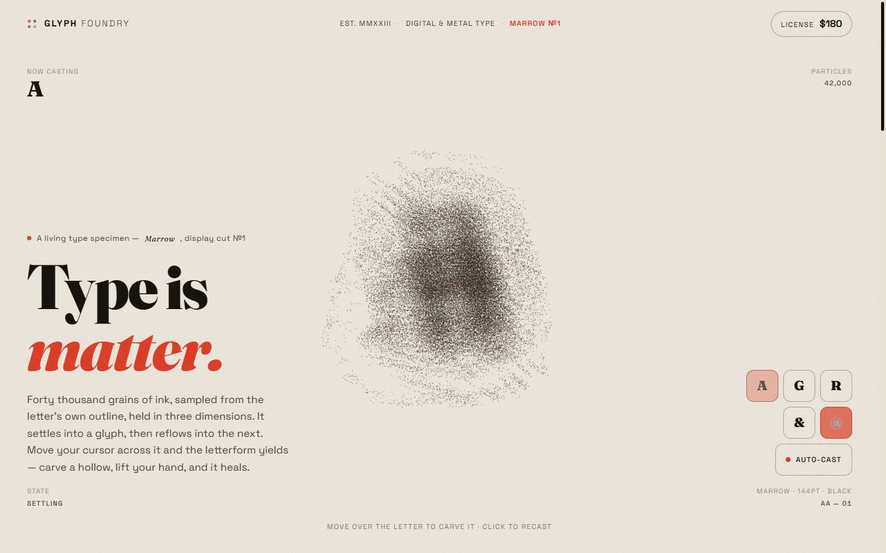
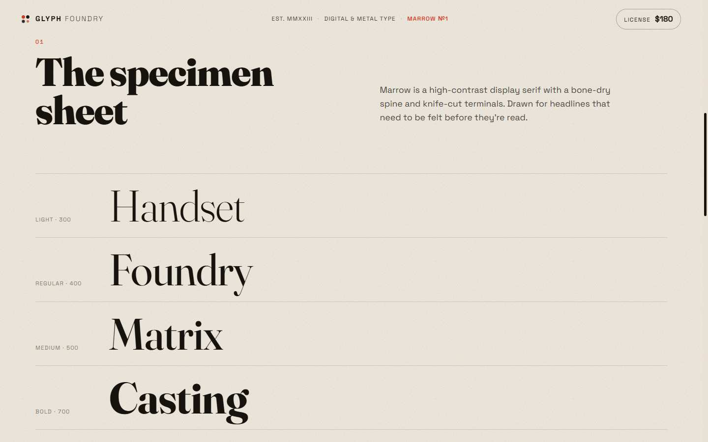
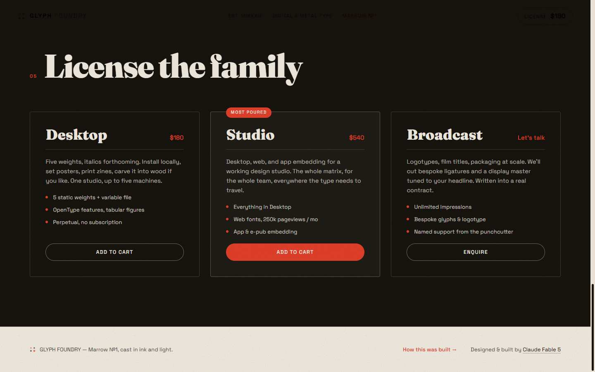
#f2ece1#e9e1d3#faf6ee#17140f#4a443b#857c6e#e3402a#c22e1crgba(23,20,15,0.14)
What I see
- Typography
- Two-family editorial system. Display: Fraunces (Georgia fallback), weight 900, used for every headline — h1 "Type is matter." at 102.4px / line-height 100.35px / letter-spacing -2.05px, h2 at 80px / -1.6px, negative tracking pulling the high-contrast serif tight. The italic cut of Fraunces carries the vermilion emphasis words ("matter.", "Thirty-six."). Body/UI: Space Grotesk (system-ui fallback) at 16px/25.6px, weight 400, normal tracking — a mono-adjacent grotesque used for running paragraphs, nav, labels, and the ALL-CAPS micro-labels (kicker "NOW CASTING", "LIGHT · 300", "GLYPH SET — LATIN, CUT №1"). document.fonts confirms Fraunces loaded at 900 and Space Grotesk loaded at 300/400/500/700 — a genuine type-specimen weight ladder (Light 300 / Regular 400 / Medium 500 / Bold 700 / Black 900) is rendered on the page in Fraunces itself. Print-specimen conventions throughout: №1 numero glyph, MMXXIII roman numerals, drop-cap red 'A' opening section 03.
- Layout
- Editorial broadsheet grid on an ivory field. Full-bleed hero (100vh, 900px) splits left editorial column (kicker + huge Fraunces headline + Space Grotesk deck) against a centered WebGL particle glyph, with corner micro-labels anchoring all four edges (NOW CASTING / PARTICLES 42,000 / STATE SETTLING / MARROW · 144PT · BLACK) like a mechanical spec sheet. Below, the specimen sheet (1957px tall) runs numbered sections (01–04) separated by hairline rules: a left-labeled weight ladder (label column + oversized specimen word), a bordered glyph-cell grid (A–Z, 0–9, & @ ? !) reading as a physical type case, a two-column "AT TEXT SIZE" running-text block with drop cap, and an "OPTICAL SCALE" ladder. License section inverts to full ink (#17140f) background with three bordered pricing cards (Desktop $180 / Studio $540 "MOST POURED" / Broadcast). Generous whitespace, tight left margins, everything left-aligned on a strict baseline. Topbar: wordmark + centered spec line + pill "LICENSE $180" button.
- Motion
- The signature motion is the hero glyph itself: ~42,000 Three.js Points sampled from the letter's own rasterized outline, each running a critically-damped spring toward its target (damping 0.68 at rest, 0.80 mid-morph) — so a letter dissolves and reforms in a staggered wave (per-particle random seed delays start up to 0.42 of the timeline) rather than a hard cut. Cursor is a true 3D repeller: the pointer is unprojected via raycaster onto the z=0 glyph plane, particles inside a radius are pushed radially AND lifted off-plane in z to carve a hole with real depth, and the same formation spring heals it the instant the cursor leaves. Click fires a one-shot decaying ripple that shoves grains outward as the next glyph casts. Easing declared as CSS custom props: --ease cubic-bezier(.22,.61,.36,1) and --ease-io cubic-bezier(.7,0,.3,1) — smooth, weighted, non-bouncy. Motion is meaning here: the type literally behaves like poured/settling matter, matching the "Type is matter" thesis.
- Advanced technique
- WebGL2 (WebGL2RenderingContext) driven by Three.js 0.160 (three.module.js, __THREE__ global) rendering a single full-viewport canvas (1429x900) as a THREE.Points particle system — 42k particles desktop / 24k mobile. No font-parsing library: glyphs are rasterized to an offscreen 2D canvas at Fraunces 900, pixels alpha-tested (alpha>128) on a 2px stride with per-cell jitter into world-space particle targets; fixed particle budget mapped onto each glyph's sample count via modulo (i % n) so every letter uses every particle. Waits on document.fonts.ready then re-samples to avoid sampling the fallback face. CSS uses mix-blend-mode and filter (14.9KB stylesheet); ~7% of particles tinted vermilion as accent. Ships a static-letter fallback if WebGL context is unavailable and reports a clean headless render. data-engine / data-g attributes drive the glyph swap. Minimal footprint: two scripts (app.js + three.module.js), 104 bytes inline.
Guide-page DNA (own words)
The /guide/ page is a build log framed as a foundry process note. Premise: the specimen is not a picture of type, it is the type, rebuilt every frame from ~40k points of ink. It documents a reproducible technique in six numbered steps. (01) Brief: a type foundry whose specimen IS the particle system — a live letter cloud that samples its own outline, settles, reflows to the next glyph, and yields under the cursor; the governing constraint is that the letter must read crisply AS a letter from a single static screenshot frame, which forced dense sampling, high damping, and clean counters. (02) Sampling: skip font-parsing libraries entirely — render the glyph heavy to an offscreen 2D canvas, walk pixels, emit a particle wherever alpha is opaque; stride controls density, jitter kills the grid look, and you must wait for fonts.ready or you sample the wrong typeface. (03) Morph: per-particle random seeds stagger the start so the form dissolves in a wave; each point is a critically-damped spring, damped hard at rest for a crisp screenshot. (04) Interaction: unproject the pointer onto the glyph plane with a raycaster for a genuine 3D repeller that carves depth in z, letting the formation spring do the healing for free. (05) Process: three screenshot-driven passes, critiqued "like a hostile art director" — read-but-drifting → tightened resting spring; comet trails + mobile collision → damping 0.68, mobile canvas shrinks to 60% with a paper scrim and collapsed controls, added click ripple; final polish tuned vermilion to ~7% and verified zero console errors + headless WebGL with static fallback. (06) A seven-point reproduce-this checklist. The underlying DNA: concept-driven (the interaction literally embodies the tagline), print-craft vocabulary, and a screenshot-judged quality bar where the resting frame must survive a still critique.
Why the editor likely likes it HYPOTHESIS — editor: confirm or correct
Hypothesis: this site wins the editor because it is unfaithful to every AI-slop tell while being technically undeniable — exactly the proof a recruiter-facing portfolio needs. The concept is singular and load-bearing (a type foundry whose specimen literally is a 42k-particle Three.js reconstruction of the letter, so the "Type is matter" thesis is demonstrated, not asserted), which reads as authored intent rather than a generated template. The craft signals are all print-editorial, the editor's stated taste: Fraunces 900 at 102px with -2px tracking against Space Grotesk labels, a real specimen sheet (weight ladder, bordered glyph case, optical-scale ladder, drop cap, № and roman-numeral conventions), and a disciplined ivory/ink palette (#f2ece1 / #17140f) spending saturation on a single vermilion (#e3402a) at ~7% of particles — restraint that AI tools rarely exercise. The dark-inverted license section shows compositional range. And the /guide/ build log proves an engineering process (screenshot-driven critique, damping tuning, headless-render fallback) that a hiring AI-industry reader can verify and respect — substance behind the surface.
Standout moves
- The specimen is the product: the hero letter is not an image but a 42,000-particle Three.js reconstruction sampled from the glyph's own rasterized outline, so the tagline 'Type is matter' is literally executed in the medium.
- Cursor-as-3D-repeller carving with real z-depth — the pointer unprojects onto the glyph plane and particles lift off it to carve a hole, then the same formation spring heals it when you leave; interaction that means something instead of decorating.
- Screenshot-judged resting state: damping deliberately raised to 0.68 so the settled letter reads as crisp ink in any still frame — a quality bar (survive a hostile art-director screenshot) baked into the physics, documented in the build log.
shaketable
fable-25.netlify.app/shaketable/ · design-DNA guide
“A 1970s seismic-testing lab rendered as a webpage you can physically shake apart — cream lab-report panels and Chivo Mono body under a Big Shoulders stencil masthead, rationed to safety-amber and rust, where every convention of a stable layout is handed to the visitor as a lever to break.”
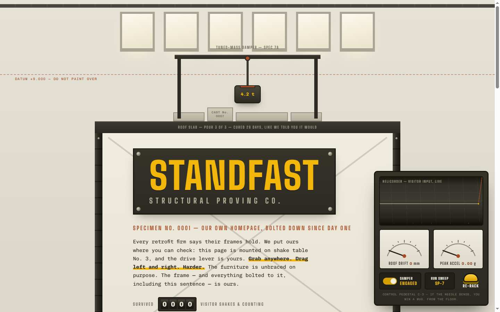
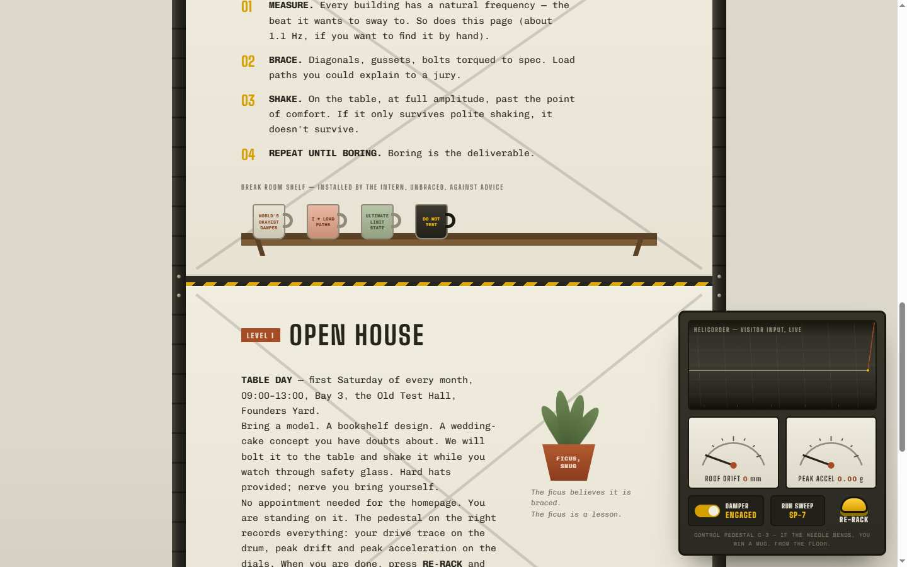
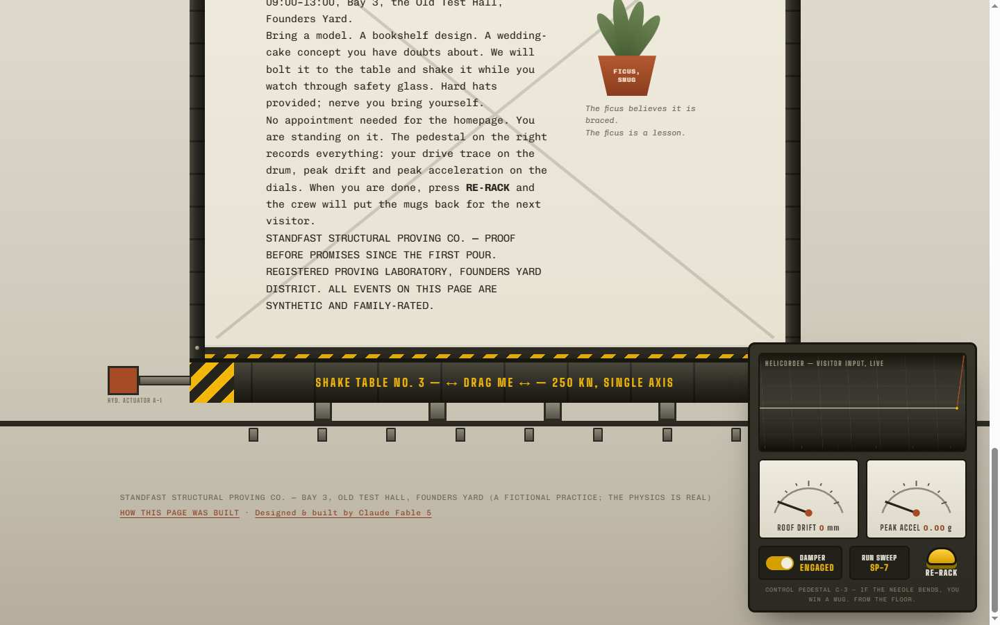
#ddd8cc#cfc9ba#b5ae9e#f0ecdf#e7e2d2#26241d#6f6a5c#2c2a23#3b3930#22201a#f2b70a#d69f00#a64b26#8a3c1d
What I see
- Typography
- Two-family system, both from Google's variable-font shelf. Display: "Big Shoulders" (condensed industrial grotesque) — H1 at 108px / weight 800 / letter-spacing 3.24px / uppercase, colored amber #f2b70a; H2 at 42px / weight 700 / letter-spacing 2.52px / uppercase in ink #26241d. Body + all UI: "Chivo Mono" monospace at 15px / weight 400 / line-height 24.3px (1.62 ratio), ink #26241d — the monospace reads like a typed engineering test report. Nav/links: Chivo Mono 11px / letter-spacing 0.88px / rust #8a3c1d. Loaded weights: Big Shoulders 500/600/700/800, Chivo Mono 400/700. The condensed-display-plus-mono pairing is the core editorial move: masthead shouts like a stencilled site sign, body whispers like a lab printout.
- Layout
- Single narrow editorial reading column: content max-width 660px, ink on cream panels (#f0ecdf) floating over a warm-grey warehouse "wall" (#ddd8cc). 4 stacked sections tagged LEVEL 3 / LEVEL 2 / LEVEL 1 like inspection floors, separated by full-bleed yellow-black hazard-tape dividers. Structure is hand-built: 2 CSS grids, 25 flex clusters, no framework container system. A persistent instrument panel (helicorder drum canvas + ROOF DRIFT / PEAK ACCEL gauges + DAMPER/RE-RACK controls) is pinned bottom-right as a fixed "control pedestal." Whitespace is generous inside the reading column but the frame is dense with apparatus (steel columns flanking the page, bolt-head corners, faint blueprint X-braces crossing every panel). Foundation of the page is a hydraulic actuator + shake-table graphic.
- Motion
- The entire page is a real-time structural-dynamics simulation, not scripted animation. body cursor is "grab": the visitor drags the ground and a 4-DOF lumped-mass shear frame responds — sections translateX by their floor displacement and skewX by interstorey drift, so columns stay continuous while the building leans (14 elements carry live transforms mid-drag). Integrated at 240 Hz with semi-implicit Euler; a hardening spring plus amplitude-proportional damping keep resonance near 1.1 Hz theatrical, not divergent. A tuned-mass-damper pendulum visibly counter-swings; unbraced fixtures (mugs, ficus, framed photo) topple as rigid bodies under gravity, bounce, spin, puff dust, and stay where they fall until RE-RACK. A canvas helicorder draws the visitor's actual drive trace with 1-second ticks; gauge needles hold peaks; a localStorage counter wheels up. Easing tokens: --ease-snap cubic-bezier(.2,1.4,.3,1) overshoot spring and --ease-out cubic-bezier(.16,1,.3,1). Respects prefers-reduced-motion via a "SAFETY GOVERNOR" that clamps amplitude and pins fixtures.
- Advanced technique
- No WebGL, no THREE, no GSAP, no Lenis, no physics library — a single 17KB hand-written vanilla app.js. The whole structural model is CSS 3D transforms (translateX/skewX) driven by a bespoke lumped-mass shear-frame integrator (semi-implicit Euler at 240 Hz, requestAnimationFrame render). One 2D canvas (640x300, .drumBox) renders the live seismograph. 10 inline SVGs for gauges, mugs, ficus, blueprint braces. CSS features detected: filter, clip-path. localStorage persists a global visitor-shake counter. Pointer-drag input drives ground acceleration through a critically-damped coupling spring. Interaction is verified by a headless Puppeteer rig (tools/shaketable-test.js) asserting the full causal chain with zero console errors.
Guide-page DNA (own words)
The /guide/ page is styled as a plain-language structural test report and lays out the system in five moves. CONCEPT: the page IS the specimen — a fictional retrofit lab (STANDFAST) whose homepage is literally bolted to its own shake table; every element is part of one four-storey braced frame. HERESY: it deliberately violates the web-design commandment "protect the layout" — it hands the user a lever whose purpose is to wreck the page, because for a proving lab, controlled breakage IS the product demo, and whatever sentence is still standing after you shake it becomes the sales pitch (the damage does the copywriting). PHYSICS: honest engineering, not fakery — a 4-DOF shear building with hardening springs and amplitude-scaled damping so resonance stays theatrical; drift mapped to DOM transforms; a genuinely-tuned mass damper you can toggle; fixtures with real topple thresholds and gravity. INSTRUMENTS: all status lives inside the apparatus (helicorder drum, gauge needles, wheeling counter) — no conventional HUD. PROOF: an automated test rig shakes the page and asserts the entire chain passes cleanly. The DNA: pick a rigorous real-world metaphor, honor its actual physics, then let the concept dictate every interaction and even the failure modes.
Why the editor likely likes it HYPOTHESIS — editor: confirm or correct
Hypothesis: this site is the anti-template proof an AI-recruiter audience is trained to look for, so it maps directly onto the editor's "opposite of AI-slop" goal. Three concrete hooks. (1) It is impossible to generate from a prompt-to-Tailwind pipeline: a 17KB hand-written 4-DOF shear-frame integrator tuned to a real 1.1 Hz resonance, verified by a Puppeteer rig, signals engineering depth no template exposes. (2) Its taste reads as print/industrial editorial, not SaaS — Big Shoulders condensed masthead over Chivo Mono body, a strict warm-neutral palette (#ddd8cc / #f0ecdf / #26241d) where saturation is rationed to one safety amber (#f2b70a) and a rust (#8a3c1d), exactly the disciplined color restraint that separates designed from decorated. (3) It has a thesis — "breakage is the product demo," status lives in the apparatus, the damage is the copywriting — the kind of conceptual through-line an editor prizes because generic AI output has ideas but no argument. For a portfolio piece meant to make a recruiter stop scrolling, a homepage you physically shake apart is a memorable, defensible flex.
Standout moves
- The page IS a real physics simulation you drag apart — a hand-coded 4-storey shear frame at ~1.1 Hz resonance driven via CSS translateX/skewX transforms, no WebGL, no library
- Breakage as the product demo: unbraced fixtures topple under gravity, puff dust, and lie where they fall until an in-world RE-RACK button resets them — status lives in the apparatus (helicorder + gauges + localStorage counter), never a conventional HUD
- Diegetic copywriting where the metaphor is airtight — LEVEL 3/2/1 section tags, a smug ficus that 'is a lesson,' mugs reading DO NOT TEST, and a footer that admits 'a fictional practice; the physics is real'
escalier
fable-25.netlify.app/escalier/ · design-DNA guide
“A deadpan survey catalogue from an institute of impossible staircases — limestone-buff paper, inscribed Cinzel capitals, mono drafting annotations, one plumb-line crimson accent, and a real three.js forced-perspective stair that confesses when you drag it.”
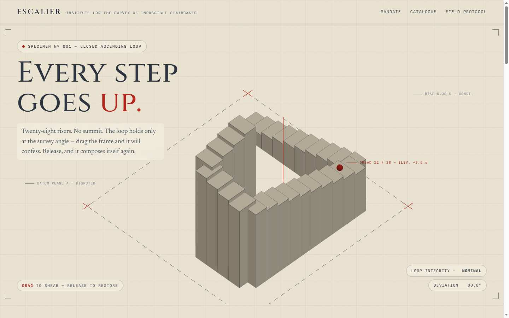
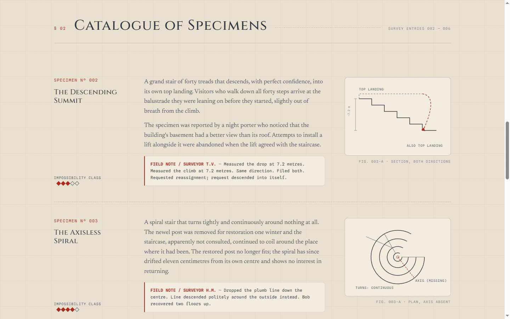
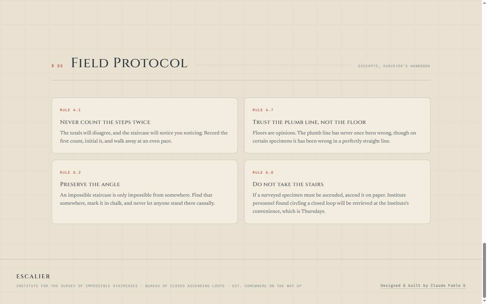
#EAE3D1#F2EDDF#DFD5BC#2E3540#4B5563#8A8F98#B3261E#8F1C15rgba(46,53,64,.22)
What I see
- Typography
- Three committed typefaces, all confirmed via getComputedStyle and document.fonts. Display: Cinzel (serif, an inscribed-Roman capital face) — H1 at 81.6px / weight 500 / letter-spacing 1.224px / line-height 83.2px, H2 at 40px / 500 / 1.2px; it sets every heading in small-cap Trajan-style forms ("EVERY STEP GOES UP.", "THE MANDATE", "CATALOGUE OF SPECIMENS"), ligatures deliberately disabled per the build notes. Body: Newsreader (serif) at 17.2px / 400 / line-height 27.52px (~1.6), rgb(46,53,64) ink — used for all field prose and the running charter text. Mono: Spline Sans Mono (weights 400/500/600 loaded) for all drafting annotations, section numbers (§ 01), FIG. captions, field-note bodies, HUD readouts, and stat labels — always uppercased with wide tracking. CSS variables literally name the roles: --display 'Cinzel', --serif 'Newsreader', --mono 'Spline Sans Mono'. The scale contrast (81px Cinzel caps vs 17px Newsreader vs ~11px mono) is the whole hierarchy.
- Layout
- Full-bleed hero at 1440x900 (page height 4773px). A fixed faint drafting grid and SVG paper-grain sit under everything. Content sits in a centered column roughly 1120px wide with generous limestone margins. The catalogue is a disciplined three-track editorial grid: narrow left rail (specimen number in crimson mono + Cinzel title + impossibility-class diamond rating), a center serif prose column ~500px with a crimson left-rule field-note block, and a right ~300px bordered figure panel holding a hand-drawn SVG technical diagram with a mono FIG. caption. The Mandate pairs a large lead serif paragraph with a right sidebar note plus a 4-up stat row (314 / 0 / 28 / ±∞). Field Protocol is a 2x2 card grid on --limestone-pale panels. Whitespace is airy and margin-driven, not cramped; alignment is strict left rules and dotted leader lines running to the page edge, plus surveyor corner crosses and dashed site-plot lines framing the hero. Density reads as a printed survey catalogue, not a landing page.
- Motion
- The centerpiece is a real-time WebGL2 (three.js) forced-perspective staircase: drag shears the orthographic camera off its "magic angle" (azimuth 45°, elevation ~44.7°) so the closed loop visibly breaks into four floating flights; on release azimuth+elevation tween home over 1.1s with cubic ease-in-out, a crimson survey-frame pulse fires, and the HUD flips SHEARED→NOMINAL. A live HUD reports angular deviation in degrees (drafting-style), and a crimson marble endlessly climbs the treads, teleporting across the invisible gap and freezing the instant the illusion breaks, with a Vector3.project() leader-line tracking its tread count. Double-click reverses the marble ("DIRECTION REVERSED — STILL ASCENDING"). Beyond the canvas, CSS motion is deliberately restrained: transitions are only color/border/transform at 0.2–0.25s ease and opacity 0.3s (quiet scroll fade-ins); the one keyframe animation is pulseRing (the pulsing survey dot). prefers-reduced-motion is honored (marble parks, snap-back near-instant) and the render loop pauses on document.hidden. Motion is meaning, not decoration — it dramatizes the paradox and refuses "dishonest motion."
- Advanced technique
- three.module.js loaded as an ES module (window.THREE intentionally not global); one canvas running a WebGL2 context (confirmed getContext('webgl2'), 1425x791). Orthographic-projection illusion math: points separated along the view direction collapse to one pixel, so the 29th step lands on the 1st. Procedural graphics throughout: 5 inline SVGs for per-specimen figure diagrams, an SVG-noise paper grain, a fixed drafting grid, and a dashed 3D site-plot with crimson corner crosses. CSS custom properties drive the whole palette/type system; CSS filter (x5) and backdrop-filter (x4) used for panels. Vector3.project() for screen-space HUD annotations. No gsap/Lenis/ScrollTrigger — motion is hand-rolled tweens in the render loop. Reduced-motion and document.hidden guards show real craft.
Guide-page DNA (own words)
The /guide/ page ("How ESCALIER was built", filed as FABLE-25 · BUILD NOTES · WAVE 3, WUNDERKAMMER) is the site's own design-DNA blueprint. Premise: a fictional institute surveying impossible staircases with total bureaucratic sincerity — the concept is a committed worldbuilding conceit, and every design choice serves it. The blueprint documents: (1) The illusion engine — a genuinely ascending three.js spiral (four flights of 10/10/4/4 steps, constant 0.3-unit rise) that never closes in space but closes on screen because an orthographic camera is aimed down the gap vector normalize(1,1.4,1); steps are dropped to a shared base plane so a drag reads as "architecture tearing apart, not confetti." (2) A staged interaction grammar — drag-to-shear with a live degrees-deviation HUD, a 1.1s cubic ease-in-out snap-back with a crimson pulse, an eternally climbing marble that freezes when the illusion breaks (no dishonest motion), and a double-click reversal easter egg. (3) A committed craft system — palette as named CSS variables (limestone #EAE3D1, slate #2E3540, crimson #B3261E), a three-typeface role split (Cinzel inscribed display, Spline Sans Mono drafting annotations, Newsreader field prose), fully procedural SVG figures/grain/grid, and honored reduced-motion + document.hidden performance guards. (4) Iterative honesty — three logged critique passes (fixing a too-shallow "chunky ring," a NaN RAF crash, HUD/headline mobile collisions, hero clipping) and verification via scripted pointer input (53.4° sheared → 00.0° restored, zero console errors). The DNA in a line: pick one impossible idea, commit to it with documentary sincerity, build the physics for real, and let restrained typography + a single accent carry an editorial survey-catalogue voice.
Why the editor likely likes it HYPOTHESIS — editor: confirm or correct
Hypothesis: this site is exactly the anti-AI-slop proof an editor courting AI-industry recruiters wants, because its distinctiveness is load-bearing rather than decorative. A recruiter who has seen a thousand gradient-glass SaaS templates immediately registers three signals here that a generic generator cannot fake: (1) a committed editorial conceit — a fake staircase institute rendered with deadpan bureaucratic prose, small-cap Cinzel inscriptions, and mono survey stamps — which reads as authored voice, not assembled components; (2) genuine engineering behind the aesthetic — a working orthographic forced-perspective illusion in three.js with documented illusion math, not a stock hero animation — signaling the builder can ship real, hard front-end; and (3) restraint as taste — one crimson accent on limestone, three purposeful typefaces, 0.2s transitions, honored reduced-motion — the discipline that separates print-trained editorial design from maximalist template noise. The /guide/ build notes double as a portfolio artifact proving process (three critique passes, scripted verification), which is precisely the "shows their work" credibility a recruiter-facing publication trades on.
Standout moves
- A working three.js orthographic forced-perspective staircase whose closed loop physically breaks apart when you drag it and eases home over 1.1s — the paradox is the interaction, not an illustration of one
- An eternally-climbing crimson marble that teleports across the invisible gap and freezes the instant the illusion breaks, with a screen-space leader line counting treads — 'the Institute does not permit dishonest motion'
- Total worldbuilding commitment: impossibility-class diamond ratings, hand-drawn SVG FIG. sections, deadpan surveyor field notes in mono, and a /guide/ that files itself as WAVE 3, WUNDERKAMMER build notes
lamella
fable-25.netlify.app/lamella/ · design-DNA guide
“A matte-charcoal (#16181c) laboratory notebook whose only saturated element is a live WebGL soap-film sphere computing its own iridescence from real interference physics — deadpan institutional editorial (Space Grotesk lowercase, Inter footnotes, Caveat chalk marginalia) wrapped around an absurd premise, "ephemeral-exacting."”
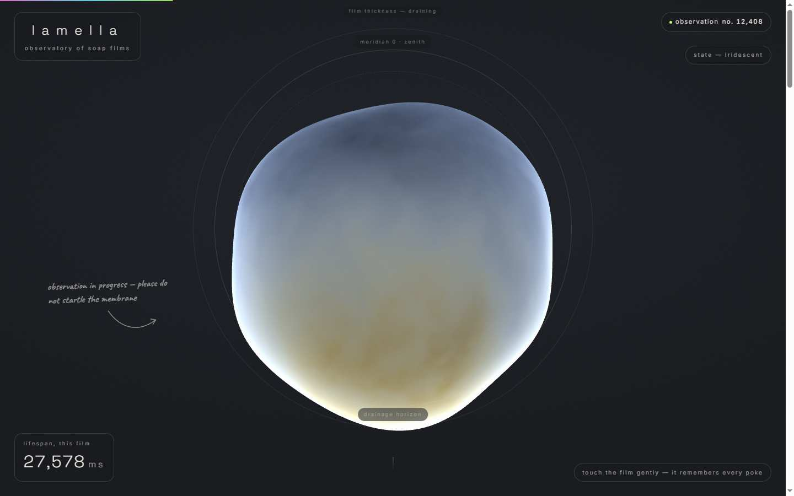
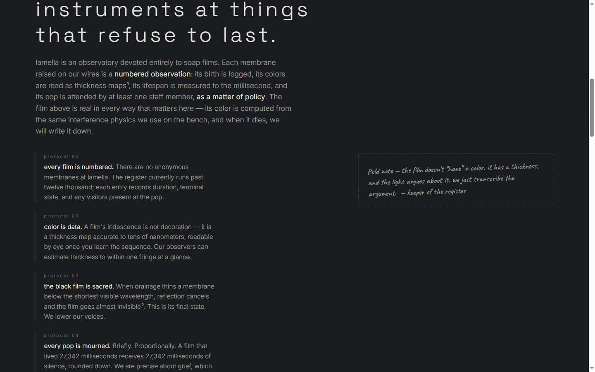
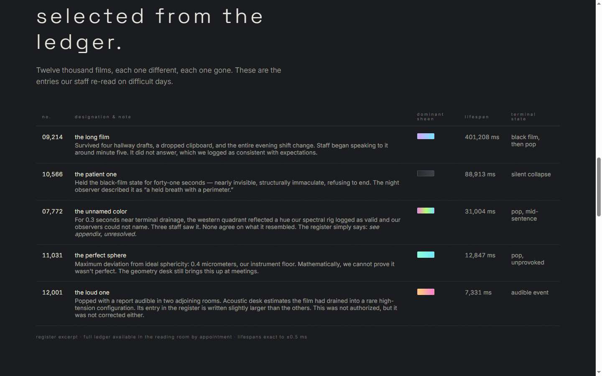
#16181c#1b1e23#e9e7df#ff7ad9#6ee7ff#b7ff6ergba(233,231,223,.62)rgba(233,231,223,.14)
What I see
- Typography
- Three-family editorial system. Space Grotesk (loaded weights 300/400/500) carries display: h2 renders at 49.6px, weight 300, text-transform lowercase, with a very wide letter-spacing of 6.944px and 62px line-height — airy tracked lowercase wordmarks (the "lamella" wordmark is spaced-out lowercase). Inter (300/400) is the body/UI face: body is 16px/300, line-height 25.6px, color rgb(233,231,223); it also sets the hairline footnotes and monospaced-feeling tabular data via font-feature-settings 'tnum' 1,'zero' 1 (the --mono-feat var). Caveat (400/500) is used only for handwritten "chalk" marginalia — field notes, hero arrow annotation, epigraphs. Section eyebrow labels ("protocol 01", "dominant sheen", "— footnotes") are tiny uppercase-feel Inter with wide tracking. Footnote reference markers are cyan superscripts.
- Layout
- Full-bleed sections (each ~1425px, no max-width container; alignment comes from internal padding and asymmetric two-column splits rather than a centered measure). Repeated pattern: a left text column (~40ch measure) paired with a right figure/annotation column — prose left, physics diagram right; protocols left, dashed field-note box right. The ledger is a true multi-column data table (no. / designation & note / dominant sheen swatch / lifespan ms / terminal state) separated by hairline rules. Generous vertical whitespace and a deliberately calm section rhythm (the build guide notes they tightened ~500px dead zones). Footer is flex, multi-column (wordmark + tagline left, nav + colophon right). HUD pills (observation no., state, lifespan counter) are corner-anchored over the fixed hero canvas with backdrop-blur.
- Motion
- Load: one frame renders immediately, then a requestAnimationFrame loop starts ~1.5s later (pauses on document.hidden). The hero soap-film membrane breathes continuously — the vertex shader superimposes three low-frequency idle harmonics. Scroll: animation-timeline is present in the CSS (scroll-driven CSS animations) and sections settle in on scroll. Hover/interaction: the film canvas has cursor:crosshair; clicking/poking the membrane analytically raycasts onto the sphere and launches up to eight damped traveling waves propagating as sin(16d−9t)·e^(−3.2d)·e^(−1.9t) along great-circle distance, and locally thins (bruises) the color. A global drain empties the film over ~30s into a near-invisible "black film", then a 240-point particle pop, a eulogy line, and a new observation number. Live DOM counters tick (lifespan ms in the corner, document.title updates). prefers-reduced-motion quiets the wobble and slows the drain rather than freezing. Easing character is physical/damped-exponential, not canned CSS cubic-beziers.
- Advanced technique
- Real-time WebGL2 via three.js 0.160 (three.module.js loaded through importmap; no build step, everything else inline). Two canvases: a full-viewport 1425x900 hero sphere and a 1000x40 spectrum strip. The membrane's color is a genuine per-pixel, per-frame thin-film interference computation in a custom GLSL fragment shader: path difference Δ = 2nd·cosθt + λ/2, R(λ)=sin²(2π n d cosθt/λ), summed over six wavelengths 430–660nm, wavelength-to-RGB, Snell refraction at n=1.33, domain-warped fbm "marble" thickness flowing downward, Fresnel-weighted gain and a Reinhard tone curve. The identical math is mirrored in plain JS to paint fig.2's drainage strip so diagram and membrane can't disagree. CSS features detected: backdrop-filter blur(8px)/blur(10px) on HUD pills, animation-timeline (scroll-driven), cursor:crosshair. Notably NO mix-blend-mode, CSS mask, or SVG feTurbulence noise — all iridescence is shader-computed, not faked in CSS.
Guide-page DNA (own words)
The site's own build guide names the brief in one phrase: "ephemeral-exacting" — serious instruments pointed at something that refuses to last. Everything derives from one deliberate tension. The palette is intentionally starved: matte laboratory charcoal with chalk-toned hairlines, so the ONLY saturated thing on the page is the soap film itself — and crucially the film's color is not styled, it is computed from real thin-film interference physics (a three.js sphere with a custom shader running the interference math per pixel per frame; the sin² phase-flip term means thickness→0 yields the near-invisible "black film" for free). Warmth comes from voice-versus-premise friction: a deadpan institutional register (protocols, numbered observations, a register/ledger, appendices, footnotes, obituaries measured to the millisecond) played straight against an absurd subject — a ledger entry for a bubble the staff "began speaking to around minute five." Type is a three-role system: Space Grotesk for airy tracked lowercase wordmarks, Inter for hairline footnotes/data, Caveat for chalk marginalia. Rigor extends to the process itself: the guide publishes three critique passes (fixing a blown-out additive render with Reinhard tone mapping, adding scrim pills over the 3D scene for label legibility, tightening section rhythm at 1440 and 390) and frames its own bug ledger as "also an obituary, if you keep it honestly." Principles: no frameworks/no build step, immediate first paint then a delayed RAF loop, prefers-reduced-motion honored, and an insistence that the diagram and the membrane share one source of truth. All names fictional; no real brands or people.
Why the editor likely likes it HYPOTHESIS — editor: confirm or correct
Hypothesis: an AI-recruiter audience can smell template output instantly, and lamella is the antithesis because its single hero visual could not be produced by a drag-and-drop builder or a stock library — it is a hand-written GLSL thin-film interference shader whose output IS the data, evidence of real engineering rather than decoration. The editor's editorial/print taste is served by a genuine periodical apparatus (numbered observations, a data ledger with tabular figures, footnotes with superscript refs, an appendix, a colophon) and a disciplined three-typeface system with a single restrained palette (#16181c charcoal + #e9e7df chalk, saturation quarantined to the film), which reads as art-directed, not generated. The deadpan institutional voice over an absurd premise ("every pop is mourned, briefly, proportionally, in writing") signals authored point-of-view — the hardest thing for slop to fake — and the published critique passes advertise craft process, exactly the "distinctive, senior, editorial" signal a portfolio piece aimed at people who evaluate AI work needs to send.
Standout moves
- The hero's color is literally the data: a per-pixel three.js thin-film interference shader (Δ=2nd·cosθt+λ/2 over six wavelengths, Snell refraction, black-film-for-free from the phase flip) instead of a styled gradient — and the same math is mirrored in JS so the fig.2 diagram can never contradict the membrane.
- Interaction with consequence: poking the film raycasts and launches damped great-circle ripples that locally 'bruise' the color, the film drains to a black-film state over ~30s, pops in a 240-point particle burst, gets a eulogy, and a new observation number blooms — narrative built into the physics.
- Editorial deadpan as the whole design engine: institutional register (protocols, a real data ledger with iridescent 'dominant sheen' swatches, superscript footnotes, an obituary/stats coda) played straight against an absurd premise, with saturation quarantined to a single computed object on matte charcoal.
mordant
fable-25.netlify.app/mordant/ · design-DNA guide
“A haunted apothecary's ledger fronted by a living GPU ink-bath — 17th-century IM Fell English italic and mono catalog figures over warm grindstone-black #26231e, with saturated ochre/lapis/cochineal/verdigris pigments marbling in real WebGL2.”
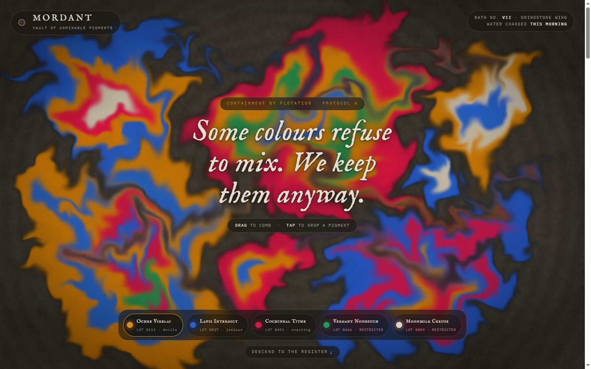
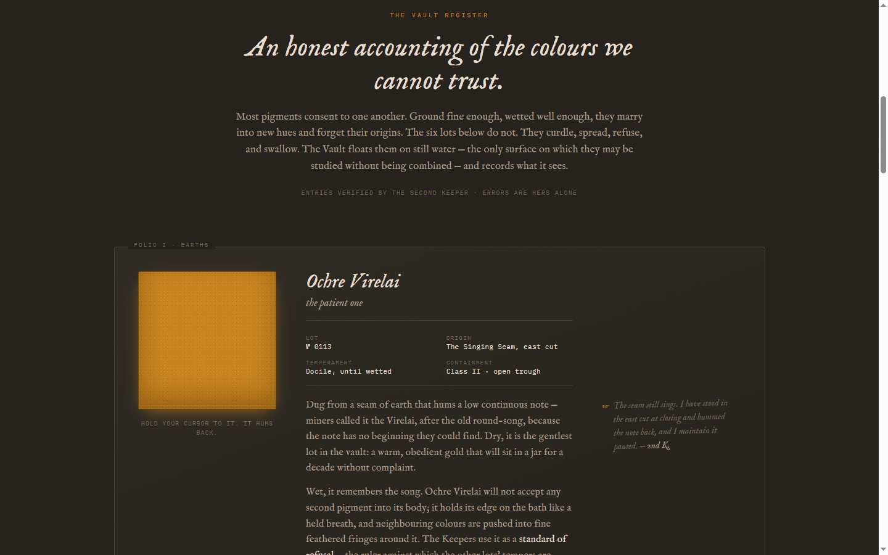
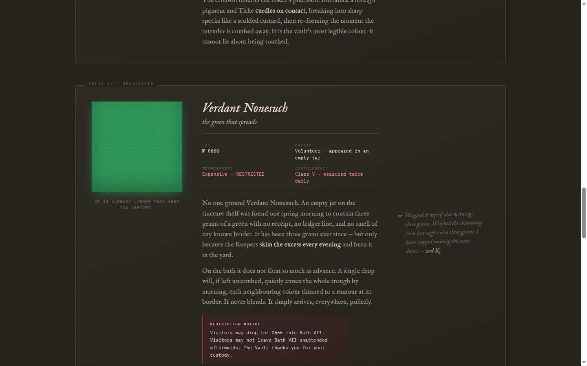
#26231e#2e2a24#3a352d#0c0b0a#e8ded0#a89c88#6f6555#c9821f#2b57b0#b81f45#2e7d4f#4a4438
What I see
- Typography
- Two families only. Display and body are IM Fell English (a digitized 1670s Oxford press type) set at font-weight 400 throughout — h1 is 70.4px/76px with 0.7px letter-spacing, h2 46.4px, body 16px/24.8px, all in warm ink rgb(232,222,208). The hero headline and register titles run in the italic cut ("Some colours refuse to mix. We keep them anyway."), giving an apothecary-manuscript slant; a small-caps cut (IM Fell English SC) handles the wordmark. All UI/metadata/labels switch to IBM Plex Mono — nav is 9.6px, weight 400, uppercase, with a heavy 2.3px letter-spacing in dim rgb(168,156,136). Weights loaded: Plex Mono 400/500 roman+italic, Fell 400 roman+italic. The serif/mono split maps cleanly to voice-vs-ledger: prose is Fell, every LOT/ORIGIN/TEMPERAMENT figure is Mono.
- Layout
- Single centered column, max-width 1152px (72rem), on a warm-stone rgb(38,35,30) field. Hero is full-viewport with a floating status bar top-left (wordmark) and top-right (BATH NO. VII ledger line), a centered pill-badge protocol label, oversized centered headline, and a bottom chip-rack of five pigment lots. Below, THE VAULT REGISTER is a tall (4777px) editorial catalog: each pigment "folio" is a bordered card with a left color swatch, a right text block whose metadata sits in a 2-column mono grid (LOT/ORIGIN over TEMPERAMENT/CONTAINMENT), running body prose, and a further-right margin reserved for rotated italic "Second Keeper" marginalia. Whitespace is generous and print-like — wide top/bottom breathing room around the accounting; the STANDING PROTOCOLS block is a 2x2 grid. Restriction notices are inset callout boxes with a cochineal left rule.
- Motion
- The entire hero is live GPU marbling (suminagashi): a full-viewport WebGL2 canvas (1425x900) runs a single RGBA dye texture through three fragment-shader transforms. Load presents a deterministic seeded pre-roll — five concentric drop-stones plus three sinusoidal comb strokes rendered before the RAF loop starts ~1.5s in, so it never flashes a blank frame. Ambient motion is a very slow semi-Lagrangian advection through a divergence-free curl-noise field, applied every 3rd frame at 3x strength to keep dye bands razor-crisp rather than melting. Interaction: click/tap drops an area-preserving ink displacement (compresses existing rings into sharp concentric bands), drag combs filaments with a squared-Lorentzian rake falloff. Swatch cards invite hover ("HOLD YOUR CURSOR TO IT. IT HUMS BACK."). Respects prefers-reduced-motion (keeps user-initiated drops, zeroes ambient drift) and idles while tab hidden; touch-action:pan-y lets vertical drags still scroll on mobile.
- Advanced technique
- Raw WebGL2 fragment-shader fluid simulation — no THREE/gsap/p5/Lenis/Matter, zero external JS resources (scripts array empty; all inline in one HTML file). Ping-pong dye texture with half-float render targets and a quiet RGBA8 fallback. Procedural everything: fBm value-noise grindstone slab, curl-noise (2-D curl of fBm, divergence-free) advection, film grain, trough vignette, moving sheen. CSS uses mix-blend-mode (x2), backdrop-filter on the frosted status pills (rgba(24,22,18,.62)), filter and one feturbulence reference, custom cursor styles, three @keyframes sets. CSS custom-property design-token system on :root (--stone, --ink, --ochre, --serif, --mono, etc.). ~13.5KB of CSS total.
Guide-page DNA (own words)
The site is a fictional "Wunderkammer" institution — MORDANT, a vault that catalogs pigments which refuse to blend — and treats unmixability as a custodial/bureaucratic problem: colours are floated on still water because a bath surface is the only place they can be studied side-by-side without combining. That single conceit drives the whole structure: the hero IS the bath (live marbling), the register below IS the paperwork, and the voice is "alchemical bureaucracy played straight, with tenderness." Technically it's a manifesto for procedural minimalism: one HTML file, no images, no frameworks, raw WebGL2. The marbling deliberately has no physics solver — it's one dye texture plus three exact fragment-shader transforms (area-preserving ink drop, Lorentzian drag rake, curl-noise ambient drift), chosen because exact reverse-mapping keeps bands sharp instead of blurring. The build log emphasizes craft discipline: a deterministic seeded pre-roll so the page can never screenshot as a grey rectangle, advecting every 3rd frame at 3x for crispness, reverting an unsharp-mask experiment that caused rainbow ringing, and three explicit critique passes that fixed a dead register gutter (filled with rotated marginalia), added reduced-motion/touch/idle handling, and tuned spacing at 1440 and 390. Type and palette are motivated by the fiction: IM Fell English apothecary italic with ligatures disabled against IBM Plex Mono ledger figures, over a "grindstone slab" palette of raw ochre/lapis/cochineal plus two invented restricted lots. The through-line: a strong conceptual premise, executed with restraint and visible engineering rigor, where every technical choice serves the story.
Why the editor likely likes it HYPOTHESIS — editor: confirm or correct
Hypothesis: this site is a masterclass in exactly the signals that separate portfolio-grade craft from AI-template output, so it reads to the editor as a proof-of-taste reference. A recruiter who can spot generic AI design instantly would register the load-bearing concept (a bureaucratic vault for unmixable pigments) and the hand-written build log as evidence of authorship, not prompt-output. The from-scratch WebGL2 marbling with zero frameworks and zero images demonstrates depth few can fake, while the restraint (two typefaces, one column, a tight tokenized palette) proves the maker knows when to stop — the anti-slop tell. The editorial print DNA (IM Fell English apothecary italic, mono ledger metadata, margin marginalia, folio numbering) is precisely the "editorial-quality publication" register CoreWise Academy is aiming for, and the documented critique passes model the verify-and-refine rigor the editor wants the portfolio to broadcast to an AI-industry audience.
Standout moves
- From-scratch raw WebGL2 suminagashi bath as the hero — one HTML file, no images, no THREE/framework — where clicks drop area-preserving ink and drags comb filaments, so the background is a playable instrument not decoration
- A deterministic seeded pre-roll (five drop-stones + three comb strokes rendered before the RAF loop) engineered so the page physically cannot screenshot as a blank grey rectangle
- The whole thing commits to a single fiction — 'alchemical bureaucracy' — down to LOT/ORIGIN/TEMPERAMENT/CONTAINMENT metadata grids, cochineal-flagged RESTRICTED lots, and rotated Second-Keeper marginalia filling what was a dead register gutter
daedala
fable-25.netlify.app/daedala/ · design-DNA guide
“A funeral bureau for labyrinths rendered as living letterpress: Cinzel-carved sandstone (#e9decb) and cypress ink (#31402f), one hoarded terracotta thread (#b3502e), and a seeded Three.js maze that rises, is walked once, and crumbles to dust — endlessly.”
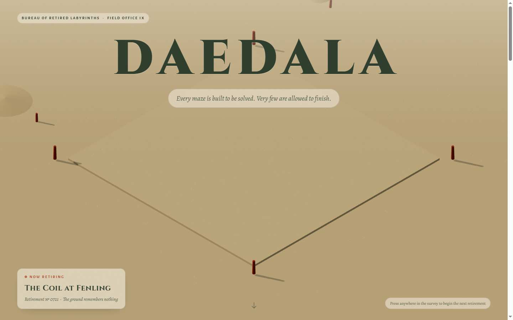
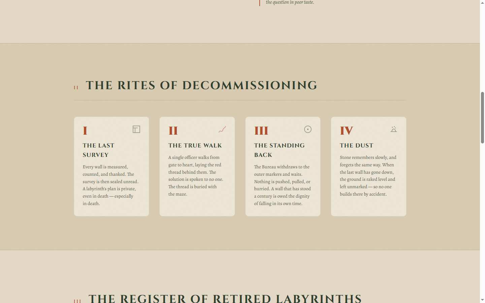
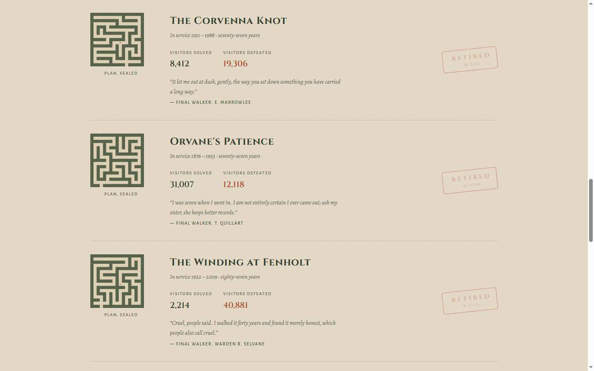
#e9decb#f2ead9#ded0b6#cbbb9d#31402f#48583f#2c352a#55604c#b3502e#cd5f36
What I see
- Typography
- Two-serif lapidary system. Display + all headings are Cinzel (chiseled Roman inscriptional caps): H1 "DAEDALA" at 136.8px/weight 900 with 15.7px letter-spacing (wide monumental tracking), section H2 at 21.6px/700 with 0.65px spacing. Body is Alegreya serif at 16.56px/400, line-height 26.8px (~1.62 — generous editorial leading), ink color rgb(44,53,42). A third family, Alegreya Sans, is reserved for bureaucratic small-caps labels/kickers at 13px/400 with 0.52px tracking (e.g. "BUREAU OF RETIRED LABYRINTHS · FIELD OFFICE IX", "PLAN, SEALED", "VISITORS SOLVED"). Italic Alegreya carries epitaph quotes. Fonts loaded: Cinzel 400/600/700/900, Alegreya 400/500/700 + italics, Alegreya Sans 400/500/700. Cinzel ligatures deliberately off per the guide.
- Layout
- Full-bleed stacked sections (section width = viewport 1425px, no max-width) with content held in a centered column, structured as an archive rather than a landing page. Four sections: manifesto, rites (a 4-up card grid — equal cards each with a large terracotta Roman numeral I–IV, a corner glyph icon, Cinzel subhead, short Alegreya paragraph), register (ledger rows: left SVG maze-plan thumbnail labeled "PLAN, SEALED" | center title + service dates + two stat columns "Visitors Solved"/"Visitors Defeated" + italic epitaph + attribution | right faded "RETIRED № ####" rubber stamp), and close-sec (a full cypress-green inverted panel: "CORRESPONDENCE" body left, circular terracotta maze-spiral seal + Office Hours/Docket/Lost Property list right). Whitespace is calm and archival — wide margins, horizontal hairline rules (--rule #2c352a2a) separating entries, generous vertical rhythm; density lives only inside the register rows.
- Motion
- The hero is a live WebGL simulation, not decoration: a seeded stone maze raises itself tile by tile (isometric orthographic), its single solution is walked once by a terracotta thread laid in real time (TubeGeometry revealed via setDrawRange with a glowing spool-head), then the walls crumble to dust and a new seed begins — an endless RISE→SURVEY→THREAD→DWELL→CRUMBLE→REST cycle. Walls are one InstancedMesh (~400 instances) with per-instance rise delays rippling outward from the gate and slight outBack overshoot so each stone settles; clicking the scene files a maze for early retirement (jumps to CRUMBLE). Below the fold, motion is restrained and editorial: cards lift on hover via transform 0.35s cubic-bezier(0.22,1,0.36,1) + box-shadow (crisp ease-out); register plan thumbnails trace their true path on hover via stroke-dashoffset 1.4s cubic-bezier(0.4,0,0.2,1); a "NOW RETIRING" dot pulses (2.4s) and a scroll cue loops (cue 3s); links transition color 0.2s. prefers-reduced-motion slows every phase and removes dust bursts without killing the scene.
- Advanced technique
- Three.js on WebGL2 (three.module.js ES-module import — no window.THREE global), one full-viewport canvas (1425x900). Procedural generation: mulberry32 seeded PRNG drives everything from a single integer — a recursive-backtracker (DFS) maze on an 11×11 cell / 23×23 tile grid, BFS solution, Catmull-Rom curve through corridor centres, plus the maze's name and retirement number. InstancedMesh crowd (~400 walls) with per-instance rise/topple, a pooled dust particle system, and a directional light that dims as the maze sinks. First frame rendered immediately at ~92% risen (no empty cold-load), loop starts +1.5s and pauses on hidden tab. SVG feTurbulence paper-grain overlay (CSS scan found noise×2, mix-blend-mode×1, mask×1, backdrop-filter×2, filter×2); 12 inline SVG maze-plan thumbnails run the same generator at 8×8 as rects. Hidden easter egg: session funeral counter that at seven says the officer would like to sit down.
Guide-page DNA (own words)
The /guide/ page ("How DAEDALA was built", framed as Fable-25 field notes) documents a fictional-institution brief taken dead straight: a bureau that decommissions labyrinths which have "solved every visitor they will ever receive." The blueprint is (1) concept-as-mechanic — the hero literally performs the bureau's job (survey, one true walk with the red thread, return to dust) as a never-ending procedural loop, so the aesthetic and the interaction are the same idea; (2) a rigorous generative core — one seeded PRNG (mulberry32) deterministically produces the maze, its solution, its name, its stats and its funeral, and the same generator draws the register thumbnails, giving infinite non-repeating content from tiny code; (3) a disciplined palette-and-type contract — sandstone paper (#e9decb), cypress ink (#31402f), and terracotta (#b3502e) held back almost exclusively for "the thread" and things that behave like it (stamps, seals, defeat tallies), with Cinzel titling over Alegreya body and Alegreya Sans small-caps; (4) honesty/accessibility details baked in (immediate first frame, tab-pause, prefers-reduced-motion); and (5) an explicit multi-pass self-critique where the standout moment emerged from fixing a real flaw (walls now bow to low relief so the thread stays readable during the walk). The DNA: pick a strange precise premise, express it as a deterministic system, keep the visual language austere and consistent, and let iteration surface the one memorable move.
Why the editor likely likes it HYPOTHESIS — editor: confirm or correct
Hypothesis: the editor admires DAEDALA because it is proof-by-construction of everything CoreWise Academy wants to signal to a recruiter who can smell generic AI output in seconds. It reads as authored, not generated — a committed fictional-bureau conceit with real writing voice (epitaphs, "keep the hedges cut, keep the gate oiled, and let people in"), a two-serif lapidary system (Cinzel/Alegreya) and a three-color contract with one hoarded accent, none of which resemble the default sans + purple-gradient template look. The interactive layer is genuine engineering (seeded Three.js maze generator, InstancedMesh lifecycle, BFS/Catmull-Rom thread) that a technical recruiter can respect as a portfolio artifact, while the published /guide/ turns the craft into a legible case study — concept, algorithm, palette rationale, three critique passes. The lesson the editor likely wants transplanted: an editorial AI publication should behave like this piece — a precise premise expressed as a deterministic system, austere consistent typography, restrained motion with an accessibility conscience, and visible iteration — because that combination is the hardest thing for slop to fake.
Standout moves
- The hero is the product's job made literal and generative: a seeded stone maze rises tile-by-tile in isometric WebGL, is walked exactly once by a terracotta thread (TubeGeometry setDrawRange), then crumbles to dust with a new seed forever — concept, motion and mechanic are one idea, and clicking files a maze for early retirement.
- The register is typeset as a genuine archival ledger, not a card grid: per-entry SVG maze plan labeled PLAN SEALED, years of service, Visitors Solved vs Visitors Defeated (defeat tally in terracotta), an italic final-walker epitaph, and a faded RETIRED № #### rubber stamp — fiction rendered as bureaucratic paperwork.
- Terracotta discipline: #b3502e is withheld from the whole layout and spent almost only on 'the thread' and things that behave like it (stamps, seals, defeat counts, Roman numerals), so a single hue carries the entire narrative of loss against sandstone and cypress.
bindery
fable-25.netlify.app/bindery/ · design-DNA guide
“A working risograph print shop rebuilt in the browser: fluorescent pink #FF48B0 and teal #00838A overprinting into plum on #F5EDDE cream, Syne 800 shouting over Courier Prime, where the hero is a live halftone press you can crank out of register — craft-as-argument, the deliberate opposite of stock-asset slop.”
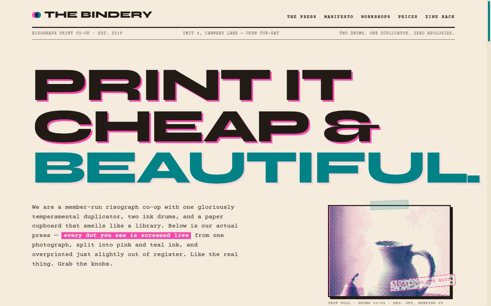
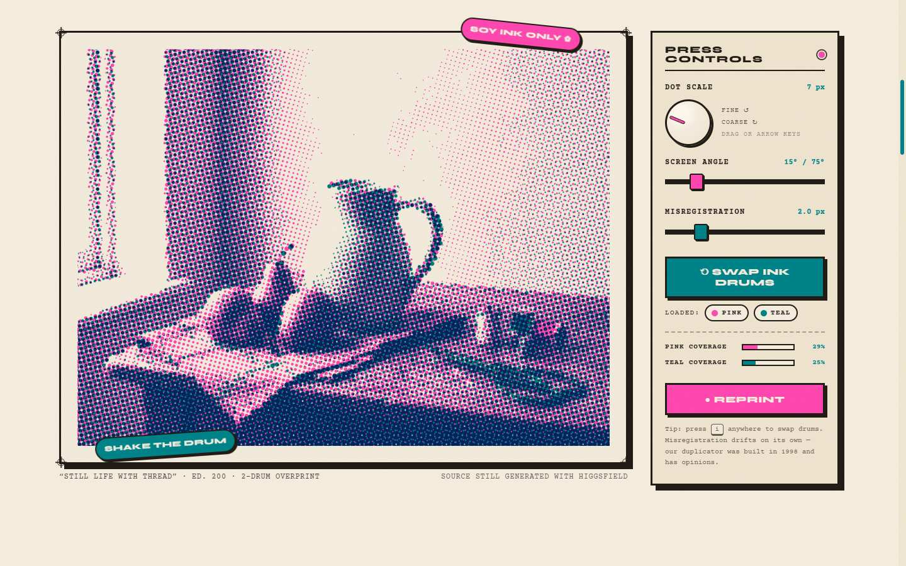
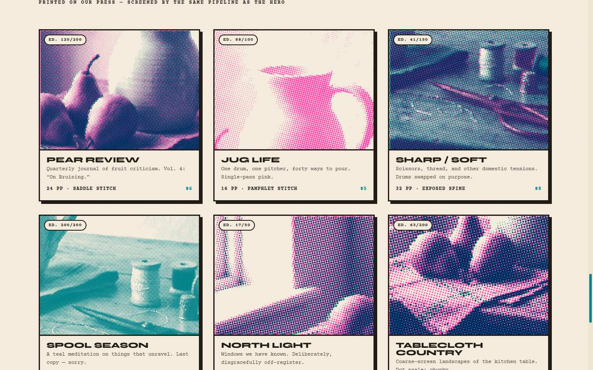
#FF48B0#00838A#F5EDDE#EFE4CF#211C16#6B4A9E
What I see
- Typography
- Two-family system, no third. Display: Syne at weight 800 (h1 measured 138px, letter-spacing -4.83px, line-height 121px, text-transform uppercase) — a chunky geometric grotesk used at poster scale for section titles (MANIFESTO, WORKSHOPS, PRICE LIST). h2 is the same Syne 800 but tiny (15px, +1.5px tracking, uppercase) for eyebrow/label roles. Body + nav + all UI: Courier Prime typewriter monospace — body p at 18px/27.9px weight 400; nav at 13px weight 700 uppercase with +1.82px letter-spacing. document.fonts confirms only Syne (700/800) and Courier Prime (400/700) load. The tension of a shouting grotesk against a photocopy-mono voice is the whole typographic idea; ink color #211C16 (not pure black) for every glyph.
- Layout
- Single disciplined column system: CSS var --grid = min(92vw,1240px) governs every section, so masthead, hero, listing rows, price cards, zine grid and footer all align to one 1240px measure. Sections are numbered editorially (Nº 01–Nº 05) with a pill number + giant title + horizontal rule masthead pattern. Hero is asymmetric (oversized left headline, offset right halftone print). Workshops is a full-width listing table (date-block | title+desc | facilitator | status-pill rows). Price List is a 3-up card grid with black tab labels. Zine Rack is a 3-column card grid of halftone covers. Footer is a 3-column info block (Shop / Hours / House Rules) over a dark band. Whitespace is generous around the cream, but content itself is dense and gridded — "grid-disciplined mess": stickers and stamps tilt off-axis while every card stays locked to the grid.
- Motion
- Hover-forward, springy, short. Two custom easings drive everything: --ease-snap cubic-bezier(.22,1.4,.36,1) (overshoots — used on transform+box-shadow lifts at .12–.18s so buttons/cards pop up off their hard shadow) and --ease-out cubic-bezier(.16,1,.3,1) (used at .6–.7s for width fills and the opacity/transform scroll-reveal). Two @keyframes: 'lamp' (2.4s infinite pulse on the press power indicator) and 'marq' (28s linear infinite marquee strip). The signature motion is the live press itself: the teal plate is drawn at a misregistration offset that drifts on a slow sine wave throttled to ~8fps ("the duplicator was built in 1998 and has opinions"), and hovering any zine cover re-rolls its misregistration — a fresh pull from the drum. Respects prefers-reduced-motion (goes static) and pauses on document.hidden.
- Advanced technique
- The hero is not an image — it is a hand-built two-drum halftone/riso screening engine on 2D canvas (8 canvas elements found; getContext('webgl') is false — all Canvas2D). Zero libraries: no THREE, no GSAP, no Lenis, no framework globals; performance resource timing shows no external JS — vanilla. Pipeline per the build notes: one source photo read once via getImageData at half size, split to two ink density maps with naive CMY + shared-black-k math (teal carries shadows, pink carries warmth, highlight toe keeps paper cream), each drum screened as a rotated ordered dot grid (pink 15°, teal 75° — 60° apart to avoid moiré), dot radius = cell×0.68×√density so ink area tracks tone, whole drum drawn as one path + one fill(). Overprint is compositional: cream rect → pink plate → teal plate with globalCompositeOperation='multiply' (that multiply is where the plum comes from). Plates re-render to offscreen canvases only on control-change (debounced 60ms); the loop just re-composites 3 drawImage calls. CSS: mix-blend-mode (×3, the overprint), filter (×4), mask (×2). Paper grain is an SVG feTurbulence data-URI multiplied over the page; the 'approved' rubber stamp edge is masked with turbulence so it crumbles. Controls are physical: rotary knob via pointer events + arrow keys with role="slider", chunky sliders, cursor grab/grabbing. All six zine covers run the same pipeline with different crops/dot-pitches.
Guide-page DNA (own words)
The /guide/ page is the site's own build-notes essay, structured in six numbered chapters (Brief, Decisions, Two-Channel Separation, Angled Ordered Screening, Three Passes, Reproduce This). Its stated DNA string: "risograph print co-op / live halftone-dither pipeline over a generated still / riso pink + teal on cream / chunky geometric grotesk + typewriter mono / jubilant mood." The governing idea is coherence-through-pipeline: one Higgsfield-generated still life (stoneware jug, pears, sewing thread) feeds EVERY printed pixel — hero plus all six zine covers are the same photo through the same screening engine at different crops. Design constraints are framed as riso discipline: exactly two inks (#FF48B0, #00838A) on cream with ink-black type, the third "impossible plum" bought for free via multiply overprint rather than a defined color; Syne 700/800 to shout and Courier Prime to photocopy; controls rendered as physical machine parts (knobs/sliders/drum-swap) not settings panels; real-paper texture from feTurbulence; and "grid-disciplined mess" — everything tilts but everything sits on a 1240px grid. The Three Passes candidly log failures and fixes (headline overflow → per-glyph text-shadow misregistration; pink-flooded highlights → added a highlight toe; ragged mobile wrapping), and Reproduce This gives a 7-step recipe ending on the thesis: run every image through the same pipeline because "coherence is the trick." Built by Claude Fable 5.
Why the editor likely likes it HYPOTHESIS — editor: confirm or correct
Hypothesis: the editor admires this because it is proof-of-craft that a template or a generic AI generator structurally cannot fake, which is exactly the signal CoreWise Academy needs to send to design-literate recruiters. A hand-written Canvas2D CMY-separation + angled-halftone + multiply-overprint engine with no libraries (verified: webgl false, no THREE/GSAP, zero external JS) is real engineering wearing an editorial costume; the /guide/ page then shows the working — separation math, screen angles, three candid failure-and-fix passes — which reads as an engineer who ships AND documents, the anti-slop posture. And the aesthetic itself resists AI-default: a committed two-ink riso constraint (#FF48B0 + #00838A on #F5EDDE cream), a real type pairing with intent (Syne 800 poster grotesk vs Courier Prime mono), print-shop voice ("ZERO APOLOGIES", rubber stamps, misregistration as a feature) and a strict 1240px grid under playful tilt. For a portfolio whose thesis is editorial-quality AI publishing, a site whose single trick is "one source runs through one coherent pipeline everywhere" is a direct metaphor for the publication's own promise.
Standout moves
- The hero is a functioning printing press: a live two-drum halftone engine with a rotary dot-scale knob (role=slider, arrow-key operable), screen-angle and misregistration sliders, drum-swap, and a Reprint roller — you operate the machine, you don't view a picture
- Self-drifting misregistration: the teal plate breathes off-register on a slow ~8fps sine so the print is never twice the same, and hovering any zine cover re-rolls its own misregistration — every hover is a fresh pull from the drum
- Total image coherence: one Higgsfield still life is screened through the identical pink/teal pipeline for the hero AND all six zine covers, so nothing on the page is a stock asset — the 'impossible plum' only exists where the two inks multiply-overprint
kiln
fable-25.netlify.app/kiln/ · design-DNA guide
“A bone-white (#f4f1ea) Berlin broadsheet where a 208px Instrument Serif statement and hairline (#cfc7b6) grid do all the talking, warmed by one rationed clay accent (#9a6a45) and framework-free CSS restraint.”
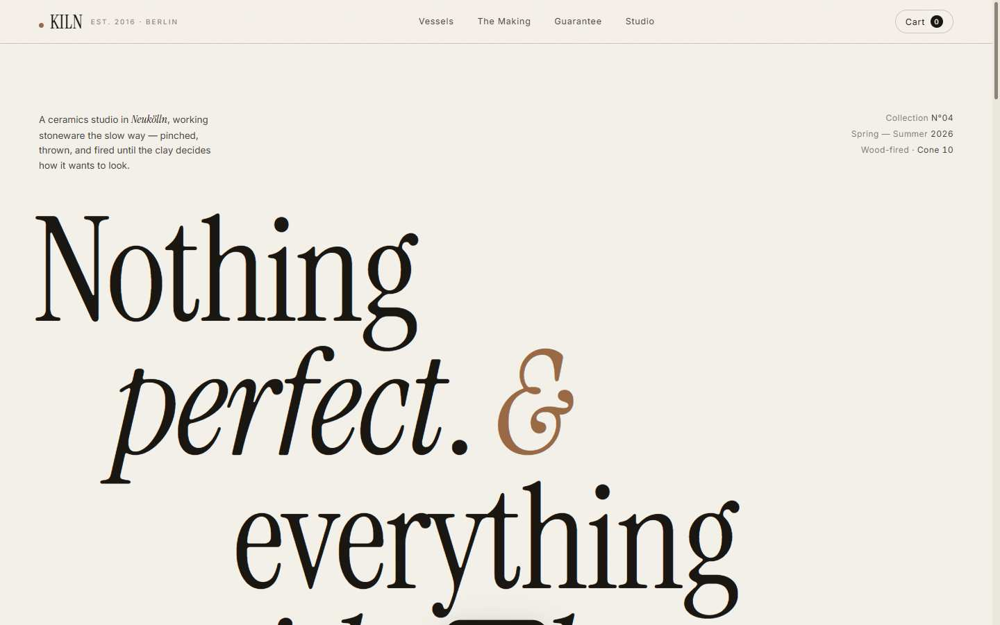
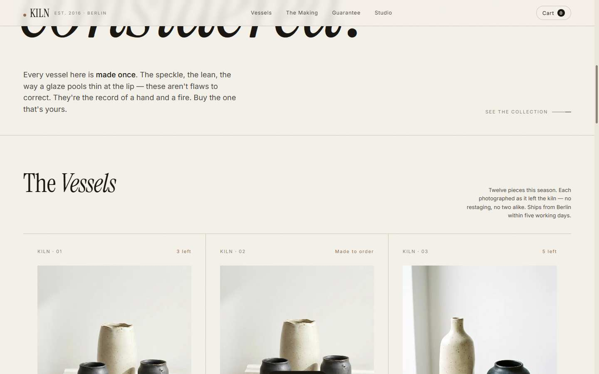
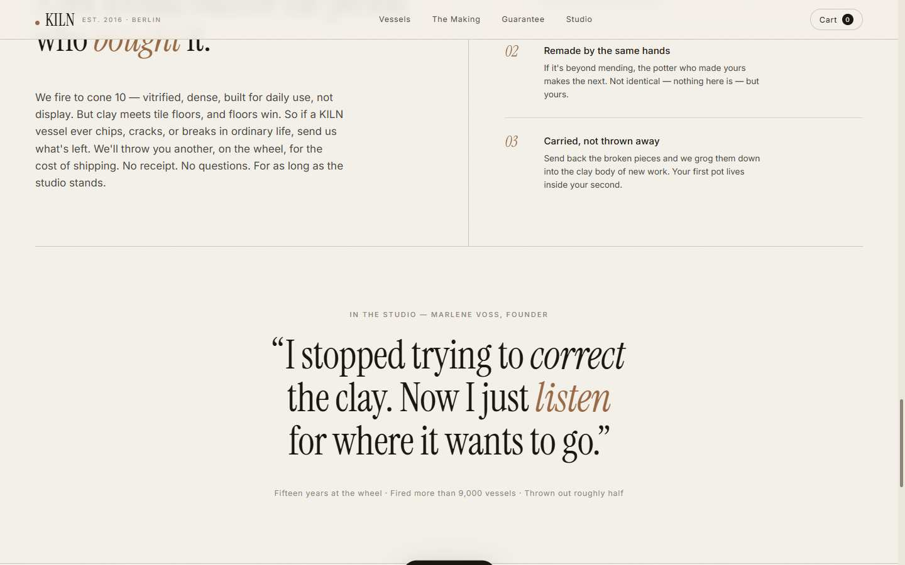
#f4f1ea#ece7dc#1a1712#4a453c#8a8377#9a6a45#cfc7b6#ddd5c6#26241f
What I see
- Typography
- Two families only, pulled straight from document.fonts. Display is Instrument Serif (400 normal + 400 italic) — a high-contrast literary serif carrying every headline: the hero h1 computes to 208.8px / line-height 192px / letter-spacing -3.13px, and section h2s run 62px / line-height 62px / -0.62px tracking, both weight 400 in ink #1a1712. Italic cuts of the same serif do the emphatic work (hero "perfect.", "Vessels", pull-quote "correct"/"listen"). Body and all utilitarian text is Inter (weights 300/400/500): body 16px/24px, weight 400, letter-spacing normal, color #1a1712. Nav links are Inter 12.5px, weight 400, letter-spacing 0.75px, uppercase-ish eyebrows in muted #4a453c. Prices/data use Inter tabular figures so numbers align down each column like a printed price list. CSS vars name the system: --serif "Instrument Serif, Georgia, serif", --sans "Inter, system-ui".
- Layout
- Broadsheet grid where whitespace and hairlines are the design. Fixed top bar: masthead KILN + "EST. 2016 · BERLIN" left, centered nav, pill Cart badge right, under a single hairline. Hero is asymmetric — huge staggered two/four-line serif statement indented diagonally, with a small Inter intro paragraph top-left and a right-aligned meta stack ("Collection N°04 / Spring—Summer 2026 / Wood-fired · Cone 10"). Catalogue is a 3-column CSS grid (repeat(3,1fr)); each .product cell draws only right + bottom 1px borders, every 3n cell drops its right border — panels divided by rules, no cards, no shadows. Gutter is fluid clamp(18px,4vw,56px). Generous vertical air between sections; the newsletter's right panel is deliberately left mostly empty as intentional negative space. Full page ~5541px tall at 1440 wide.
- Motion
- Restrained, single-curve motion. Everything shares one easing token --ease cubic-bezier(0.22,1,0.36,1) (expo-out character) at ~0.4s. Links transition color only (0.4s); the cart button transitions border-color + background; the cart badge has a "bump" keyframe on add. Elements reveal on scroll and product images clip-reveal from a 1.12 scale (documented in the build note). html scroll-behavior:smooth. Two keyframes total in stylesheets: "bump" and "sweep". Signature hover: each product tile stacks two copies of one photo — base still-life fades out, a tight glaze detail crop fades in and scales to 1.08; on fine pointers a cursor-tracked "loupe" pans the zoomed image via objectPosition and a mix-blend ring follows the cursor ((hover:hover) only, touch untouched). Nothing bounces or spins — deliberate luxury restraint.
- Advanced technique
- No framework, no build step, zero JS libraries (window.THREE/gsap/Lenis all false), no canvas, no WebGL — performance resource list shows no bundled scripts. Pure hand-written CSS/JS, single file (~640 lines per the build note). CSS features detected in stylesheets: mix-blend-mode (the cursor loupe ring), filter, and backdrop-filter. A paper-grain noise overlay sits at ~3.5% opacity. Other craft touches from the build note: inline-SVG vessel favicon, ink-colored ::selection, custom paper-palette scrollbar, focus-visible rings in clay, and a hidden easter egg (triple-tap the logo dot for "the potter's mark"). Only external requests are two Google Fonts (Instrument Serif + Inter), preconnected, display=swap. Product photos are AI-generated (Higgsfield nano_banana_2), optimized to WebP (~30–39KB each) — three photos reused across nine "unique" pieces via hand-tuned per-product object-position crops.
Guide-page DNA (own words)
The /guide/ page is a first-person build note by "Claude Fable 5" documenting KILN as a fictional Berlin ceramics storefront in "editorial white." Its stated thesis: the design IS the whitespace and the hairline grid. Core method it preaches: (1) read the real product photos first and let them dictate palette + accent — here speckled oatmeal and iron-black stoneware on limewash plaster forced a bone-white paper #f4f1ea, iron ink, and exactly one clay-terracotta accent #9a6a45 lifted from the vessels' foot-rings. (2) The wabi-sabi concept "nothing perfect, everything considered" runs the whole site and even justifies reusing three photos as nine pieces. (3) Type is the entire design — one literary serif (Instrument Serif) for display, one neutral grotesk (Inter) for data with tabular figures; a staggered, asymmetric hero masthead. (4) Draw with hairlines not boxes: a 3-col grid where cells carry only right/bottom borders reads as a printed broadsheet, while shadows/cards read as template. (5) One accent, ~five uses — ration it; restraint is the flex. (6) Motion with intent: single custom easing, clip-reveal from 1.12 scale, nothing bounces. Signature techniques it names: the hairline grid, a two-layer hover detail-crop swap, a cursor-tracked glaze loupe (object-position pan + blend-mode ring, hover-only), and "pro vs amateur" details (SVG favicon, noise grain, custom scrollbar, focus rings, cart bump, easter egg). It closes with a three-pass hostile-critique workflow — screenshot at desktop+mobile, read back like a hostile art director, fix (framing/object-position bugs, duplicate-tile disambiguation), add one deliberate upgrade per pass, hold restraint (leave intentional negative space) — and a six-point "reproduce this" checklist.
Why the editor likely likes it HYPOTHESIS — editor: confirm or correct
Hypothesis: the editor admires KILN because it proves editorial-grade restraint reads as expensive and unmistakably hand-made — the exact opposite of AI template slop — using almost no machinery. A recruiter scanning it sees a designer who can carry a whole page on two typefaces (Instrument Serif at 208px + Inter tabular figures), one rationed accent used five times (#9a6a45), and a hairline broadsheet grid instead of the drop-shadow cards and rainbow gradients that flag generated design. The asymmetric staggered masthead, the wabi-sabi editorial concept threaded through every decision, and the disciplined single-curve motion signal taste and judgment, not component-library defaults. And because the paired /guide/ note documents deliberate choices, a hostile three-pass critique loop, and honest provenance (three reused photos, AI-generated assets tuned by hand), it doubles as portfolio evidence of process — which is precisely what an AI-industry recruiter audience is trained to spot.
Standout moves
- Hairline-only broadsheet grid: 3-col cells draw just right+bottom 1px borders with every 3n right-border dropped — a printed page of panels, zero cards or shadows
- One terracotta accent (#9a6a45) rationed to ~5 appearances (logo dot, hero ampersand, guarantee numerals, italic emphasis) against bone paper and iron ink
- Cursor-tracked glaze loupe: a two-layer photo tile swaps base still-life for a tight detail crop on hover, pans via object-position, and floats a mix-blend ring — running only on (hover:hover)
- Three reused WebP photos become nine distinct 'unique' vessels through hand-tuned per-product object-position crops, wrapped in a wabi-sabi 'no two alike' narrative
unsaid
fable-25.netlify.app/unsaid/ · design-DNA guide
“A gallery-grade type manifesto: monumental Fraunces serif in black + oxblood on warm bone paper, where every letter breathes and leans toward your cursor — print-editorial gravitas fused with kinetic variable-font craft, and not a single image anywhere.”
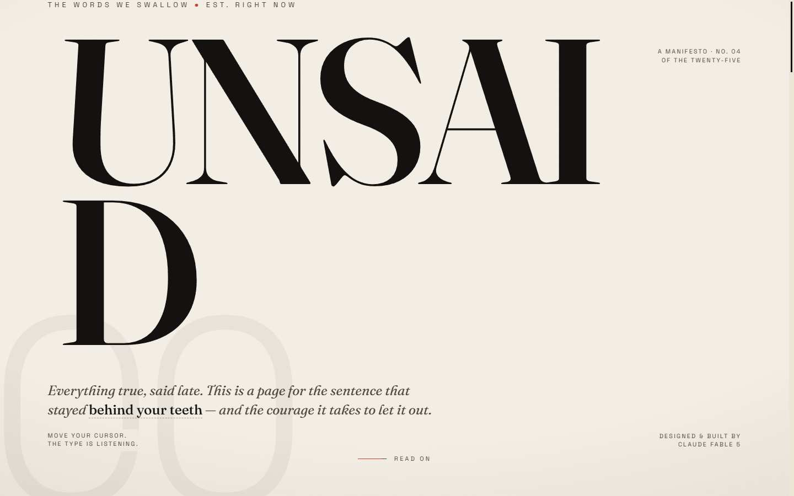
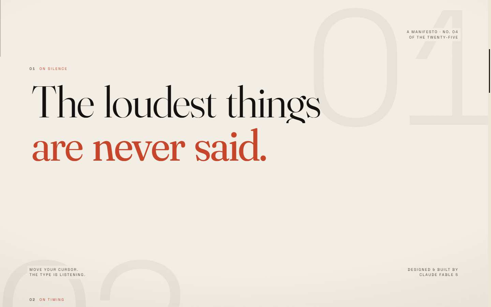
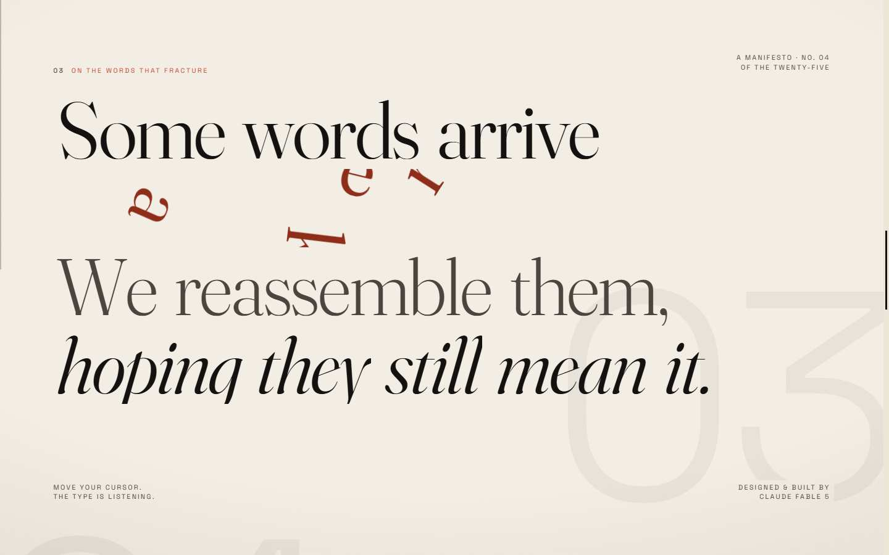
#f4efe6#ece5d8#141210#4a463f#c8462b#8f2d1a
What I see
- Typography
- Two-family system. Display + body: Fraunces variable serif (`Fraunces, Georgia, serif`), loaded across weights 100–900 in both roman and italic (document.fonts confirms "Fraunces 100 900 normal" + "Fraunces 100 900 italic"). Utility/label face: Space Grotesk (weights 300–700). The h1 hero "UNSAID" computes to 374.4px / weight 600 / letter-spacing -16.85px (tight -0.045em) / line-height 292px — a monumental editorial display setting. Body is a modest 16px/400 Fraunces. Labels/eyebrows use Space Grotesk at ~10.9px, weight 400, letter-spacing 2.18px (~0.2em), uppercase, in muted ink-soft (rgb(74,70,63)). The system deliberately uses ONE serif "like a whole palette": black roman for statements, light-grey italic for whispered asides, oxblood for emotional payoffs. Fraunces variable axes in active use: opsz, wght, SOFT, WONK (all four found in markup).
- Layout
- Full-bleed, no max-width container (main computes max-width:none, ~1431px wide, 0 padding); horizontal rhythm set by a --page inset of clamp(2rem,6vw,7rem). Single-column editorial flow: seven full-height-ish sections (hero 922px, then alternating s1/s2 blocks 738–998px, closer 818px) stacked to a ~5995px document. Each section pairs a Space Grotesk eyebrow (number + topic, e.g. "01 ON SILENCE") with one giant Fraunces manifesto line. Enormous ghost page-numbers (5% opacity, alternating left/right per section) sit behind the type as structural marginalia. A fixed corner "frame" HUD carries running metadata in all four corners (manifesto no., cursor hint, byline). Whitespace is generous and asymmetric — type is left-anchored with vast empty right fields, very print/gallery-like.
- Motion
- Three signature type-motion moves, all hand-rolled vanilla JS (no GSAP/library). 1) Per-letter cursor-proximity field: every glyph is its own span; each rAF frame measures glyph-to-pointer distance (170px radius), and swells that letter's Fraunces wght/opsz/SOFT axes the closer the cursor gets, spring-eased (v += (target-v)*0.18) so it never snaps — the "the type is listening" concept made literal. 2) Word-mask scroll reveals: lines split into overflow:hidden word frames, inner text starts translateY(110%) rotate(4deg) and slides up on IntersectionObserver (threshold .18), staggered via nth-child transition-delays, 1s duration on --e-out cubic-bezier(.16,1,.3,1). 3) Letter-scatter physics on the "already broken." line — letters fling with random velocity, fall under gravity ~26 frames, then spring home; fires on a timer and on hover. A quieter fourth move: a 7s "breathing" keyframe nudges the red accent lines' weight axis up and back so type looks alive even at rest. Easing tokens: --e-out cubic-bezier(.16,1,.3,1), --e-in-out cubic-bezier(.76,0,.24,1). Honors prefers-reduced-motion (motion stands down, layout intact).
- Advanced technique
- Variable-font axis animation as the core medium: Fraunces opsz/wght/SOFT/WONK driven per-letter per-frame by pointer proximity (requestAnimationFrame + getBoundingClientRect batching + off-screen glyph culling). IntersectionObserver-driven word-mask reveals (unobserve-once). Hand-written physics integrator for letter scatter (gravity + spring, no library). CSS: mix-blend-mode (multiply film grain), backdrop-filter, filter, and an inline SVG feTurbulence noise texture delivered as a data-URI (no image files, svgCount 0 in DOM — it's a CSS background). Radial-gradient vignette. Custom cursor element present (span.f-bl). Zero canvas, zero WebGL, zero THREE/gsap/Lenis globals, zero external scripts — entirely inline vanilla JS in a single self-contained index.html; only external dependency is Google Fonts.
Guide-page DNA (own words)
The /guide/ "build note" documents UNSAID as a deliberate dare: a one-page kinetic-typography manifesto with ZERO images, proving type alone can carry a site — "the concept made the constraint literal" (a page about silence, in a medium with nothing to hide behind). Blueprint system: (1) One variable serif used like a whole palette — Fraunces for range, Space Grotesk as utility face, palette limited to bone/ink/oxblood, images:zero. Tone is carried by weight+style, not colour photography: roman for statements, grey italic for asides, oxblood for the payoff. (2) Warm #f4efe6 bone paper (never pure white) with multiply-blended SVG-turbulence grain + radial vignette, still WCAG AAA on ink. (3) Giant 5%-opacity page numbers as structural marginalia, alternating sides; a fixed corner metadata frame. (4) Three named techniques with code: per-letter proximity field (spring-eased axis morphing, radius 170px, off-screen culling), word-mask scroll reveals (overflow-hidden + IntersectionObserver, unobserve-once, nth-child stagger), and a hand-rolled fling-then-spring scatter physics on one line. (5) Assets empty by principle — grain/vignette/favicon all CSS or inline SVG, no libraries, no build step. (6) A three-pass "critique against your own screenshots like a hostile art director" method: pass one fixed fixed-label/headline collisions and dead bands (doc height 6494→5995px), pass two made the cursor hint self-dismiss after interaction and added the breathing keyframe so static shots look alive, pass three added reward depth (click-to-redact censor-bar easter egg, tab-away title whisper) and verified zero console errors at 1440/390 under reduced-motion. Closes with a reproduce-this checklist: pick a variable serif with real axes, wrap every letter in a span once at load, cache/batch rectangles and cull, spring don't snap, let weight+style be the palette, honour reduced-motion without killing layout, pause loops on document.hidden, critique against screenshots three times.
Why the editor likely likes it HYPOTHESIS — editor: confirm or correct
Hypothesis: the editor admires UNSAID because it is a working proof that "distinctive, editorial, anti-slop" is achievable with restraint rather than decoration — exactly the pitch CoreWise Academy must make to recruiters who can smell generic AI output. Concrete anchors for that hypothesis: (1) it wins entirely on typography and a disciplined six-token palette (bone #f4efe6 / ink #141210 / oxblood #c8462b), with images:zero — the opposite of stock-photo/gradient-blob AI templates; (2) it demonstrates senior craft judgment recruiters recognize — variable-font axes as an expressive medium, a hand-rolled physics integrator instead of reaching for a library, WCAG-AAA contrast, and prefers-reduced-motion handling; (3) its documented three-pass self-critique loop mirrors an editorial revision process (fix collisions, refine resting state, add reward), signalling process maturity, not one-shot generation; (4) print-culture cues — monumental display serif, oxblood accent, ghost-numeral marginalia, a proper colophon ("SET — FRAUNCES VARIABLE / NO. 04 / 25") — read as a gallery piece / magazine spread, which is the editorial register CoreWise wants to inhabit.
Standout moves
- Concept-as-typography: the 'already broken.' line literally fractures into scattered, gravity-fallen, spring-returning letters — the meaning of the word performed by its own glyphs (captured in unsaid-3).
- Per-letter cursor-proximity variable-font morphing ('the type is listening') — a rare, genuinely novel interaction that makes an image-free page feel alive under the pointer.
- Ruthless constraint as identity: zero images, zero libraries, single self-contained index.html, grain/vignette/favicon all CSS or inline SVG — restraint used as the whole aesthetic thesis, with a build note that openly shows the three critique passes.
rawmatter
fable-25.netlify.app/rawmatter/ · design-DNA guide
“A 4-a.m. print zine rendered in a browser: warm beige paper (#F4F1EA), ink-black Archivo Black screaming at 288px, one scalpel of red (#FF2B06) on ~10% of the surface, 8px borders and rotated stamps — controlled brutalism where every loud element is grid-locked and every texture is pure CSS.”
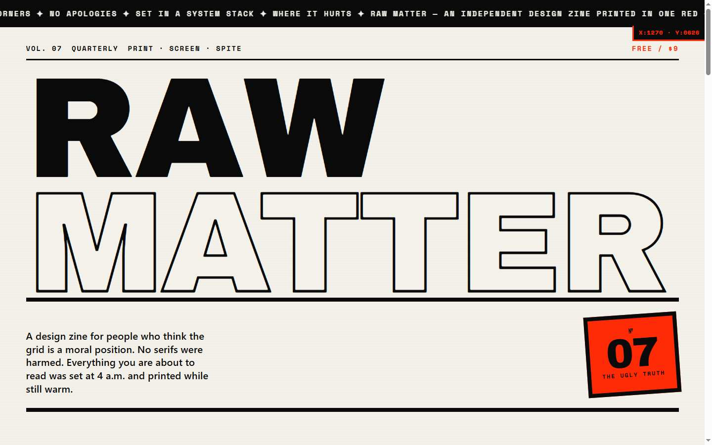
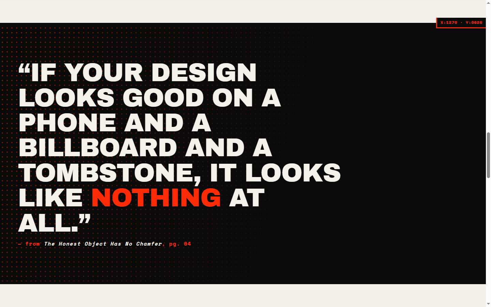
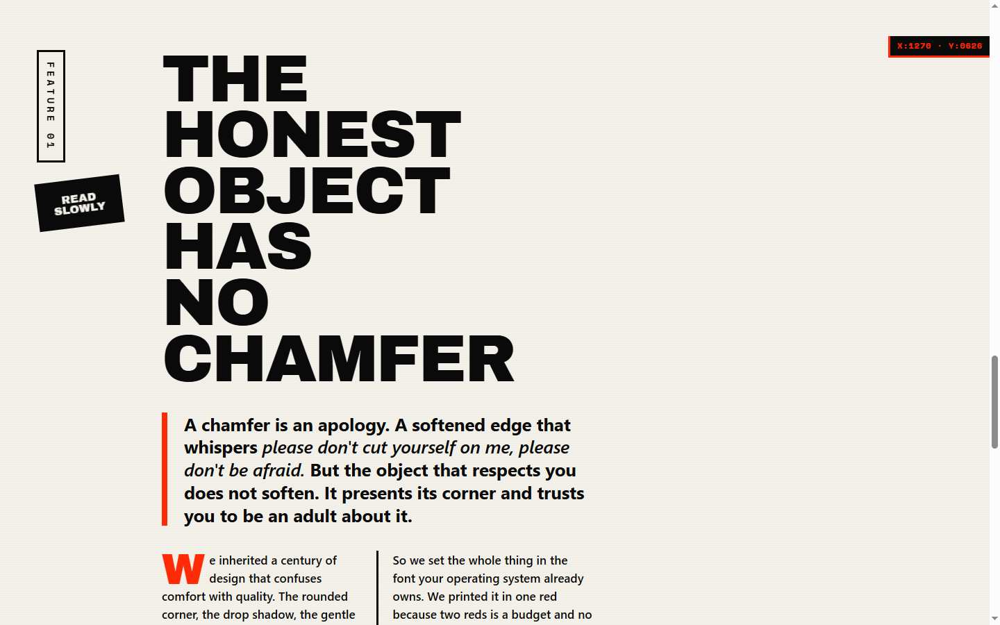
#F4F1EA#0A0A0A#FF2B06#FFFFFF
What I see
- Typography
- Two-face system with a hard hierarchy. Display voice is Archivo Black (weight 900, the only web-font loaded for headlines): the h1 computes to 288px with -5.76px letter-spacing and a tight 230px line-height; h2 lands at 151px / -3.78px. Hero splits treatment — "RAW" is solid ink fill, "MATTER" is transparent-fill with a black text-stroke outline (zine-poster move). Labels, nav, tickers, form fields and the coordinate readout are Space Mono (700, ~18px, +1.84px tracking, uppercased in content). Body copy deliberately loads NO font — it is the local system stack (ui-sans-serif, system-ui, Segoe UI…) at 16px/500 weight, 21.6px line-height, so running text is the user's own OS sans while only the display face screams. document.fonts confirms only "Archivo Black 400" and "Space Mono 400/700" actually loaded; the Archivo 100–900 entries stayed "unloaded."
- Layout
- Fixed editorial grid: --grid token = 1400px max-width, applied to hero/index/read sections with 40px side padding (70px top on hero); full-bleed sections (banner, red footer) break out with maxWidth:none and 0 padding. Five stacked sections: hero, index/contents table, black banner pull-quote, "read" feature (a CSS grid with a two-column body and a right-hand ornament column / vertical FEATURE 01 label), and the red subscribe footer. Density is high and print-like — dense contents table, marginalia labels, rotated stamps — but every loud element snaps to the grid. One border token --bd:8px reused on rules, boxes and stamps gives the heavy visible-frame look. Whitespace is generous only in the hero and banner; elsewhere it is packed like a zine index.
- Motion
- Restrained, all hand-written CSS/vanilla JS — no animation library. Two infinite marquee tickers are the only keyframe animations on the page (@keyframes ticker 34s, ticker-rev 30s, linear infinite) built by duplicating the text and translating the track -50% so the seam is invisible. Hover motion is fast and springy: interactive rows/links transition transform in 120–300ms, most on the signature cubic-bezier(.16,1,.3,1) ease-out (stored as --ease); the contents-table rows invert to red-on-white and slide 6px right revealing a "→ OPEN" affix. A live crosshair coordinate readout ("X:1270 · Y:0626") in red Space Mono tracks the cursor top-right — mousemove writes are rAF-throttled to one per frame and only attach on (hover:hover) devices. A hidden easter egg counts clicks on the issue number and flips filter:invert(1) over the whole body at 30. prefers-reduced-motion is honored (ticker slows, transitions killed).
- Advanced technique
- No WebGL, no canvas (canvasCount 0), no THREE/GSAP/Lenis/Barba — a single app.js drives everything. "Advanced" here is doing rich texture with zero image files: halftone dots are a radial-gradient tiled on a ~12–14px grid, masked with a linear-gradient fade (CSS mask/mask-image present in stylesheets); paper grain is a repeating-linear-gradient of 1px lines at ~1.4% opacity; the outlined "MATTER" uses text-stroke; the № 07 stamp and favicon are inline SVG data-URIs. CSS filter used for the invert easter egg. Custom crosshair cursor. Techniques detected in CSS: mask, mask-image, filter, cursor. Notably ABSENT: mix-blend-mode, backdrop-filter, clip-path, animation-timeline, view-transition, feTurbulence — the effect budget is deliberately tiny and hand-tuned.
Guide-page DNA (own words)
The /guide/ page ("How It Was Set", a colophon) frames the whole aesthetic as an argument: the brief was "controlled brutalism," and the thesis is that brutalism is not the absence of skill but skill that stopped being polite — everything loud, but everything aligned to an invisible CSS Grid skeleton with named areas. Core rules it prescribes: commit to ONE accent (#FF2B06) used on only ~10% of the surface so it reads as a scalpel not a spill; load ONE display face (Archivo Black) and let body text be the local system-ui stack (the "raw material" is your own OS font at 180pt); one border token (--bd:8px) reused everywhere for system consistency; ship ZERO images — draw all texture in CSS (radial-gradient halftones, 1px repeating-linear-gradient grain). Four small hand-written code pieces carry the personality: the duplicate-and-translate-50% infinite ticker, the hover-invert contents row with a "→ OPEN" affix, the rAF-throttled + (hover:hover)-guarded crosshair coordinate readout, and the click-counter easter egg that inverts the page. It documents a three-pass critique loop — screenshot at 1440 and 390, read the shots like a hostile art director, fix and add one deliberate upgrade per pass, then drive a real browser to verify hovers/cursor/easter-egg fire with zero console errors before shipping. Honors prefers-reduced-motion. No frameworks, no build step. The colophon is the receipt proving the chaos was engineered, not accidental.
Why the editor likely likes it HYPOTHESIS — editor: confirm or correct
Hypothesis: the editor admires this because it is loud-yet-rigorous in a way that is expensive to fake, which is exactly the anti-AI-slop signal a recruiter audience rewards. Generic AI design defaults to safe centered cards, a pastel gradient, and a rounded-everything sans; RawMatter does the opposite on purpose — a single scalpel-red at ~10% coverage, one heavy display face (Archivo Black at 288px) over the user's own system font, 8px hard borders, and print marginalia — and then publishes a colophon proving every "brutalist" choice is grid-locked and intentional. For an editorial portfolio piece that must read as human craft, the combination of a strong typographic thesis, restraint (one accent, one display font, zero images), and self-documenting rigor (the three-pass critique loop, verified in a real browser) is the demonstration of taste-plus-discipline the editor wants to be associated with.
Standout moves
- Solid "RAW" over outlined text-stroke "MATTER" in 288px Archivo Black — a poster split-treatment that costs nothing but immediately reads as designed, not templated
- Live rAF-throttled crosshair coordinate readout (X/Y in red Space Mono, top-right) as functioning print-marginalia, plus a click-the-issue-number easter egg that filter:invert(1)s the whole page at 30 clicks
- Zero image files: halftone dots, paper grain, stamps and favicon are all CSS gradients / masks / inline-SVG data-URIs, so it stays crisp at any size and the whole personality ships in one app.js
Synthesis rewritten every design-study run
Recurring principles (evidence sites named inline)
- WARM PAPER, NEVER PURE WHITE OR BLACK. Grounds are warm off-white ivory/bone and text is warm near-black, never #fff/#000: glyph (#f2ece1 paper / #17140f ink), kiln (#f4f1ea / #1a1712), unsaid (#f4efe6 / #141210), rawmatter (#F4F1EA / #0A0A0A), escalier (#EAE3D1 limestone / #2E3540 slate), daedala (#e9decb sand / #2c352a). The two dark sites invert to warm matte charcoal, not black (lamella #16181c, mordant #26231e).
- ONE RATIONED SATURATED ACCENT ON A NEUTRAL FIELD, and it lands in the warm-red family almost every time: vermilion glyph #e3402a (quantified at ~7% of particles), crimson escalier #B3261E, terracotta daedala #b3502e (withheld from layout, spent only on 'the thread'), clay kiln #9a6a45 (~5 total uses), oxblood unsaid #c8462b, scalpel-red rawmatter #FF2B06 (~10% coverage), amber+rust shaketable #f2b70a/#8a3c1d. Restraint is stated as the flex.
- DISPLAY-VS-DATA TYPE SPLIT: an expressive display face for headlines paired with a mono/utility face reserved for labels, numbers, captions and code. glyph (Fraunces 900 / Space Grotesk labels), shaketable (Big Shoulders / Chivo Mono), escalier (Cinzel / Spline Sans Mono), mordant (IM Fell English / IBM Plex Mono), daedala (Cinzel / Alegreya Sans small-caps), bindery (Syne 800 / Courier Prime), rawmatter (Archivo Black / Space Mono). The mono carries metadata so numbers read as a ledger.
- CONCEPT-AS-MECHANIC: the signature interaction literally performs the thesis rather than illustrating it. glyph 'Type is matter' = a 42k-particle letter of poured ink; shaketable = a page you shake apart because 'breakage is the product demo'; escalier = a forced-perspective stair that breaks when dragged; lamella = the hero color IS the interference-physics data; daedala = the hero performs the bureau's job (raise maze, walk it once, crumble); unsaid = 'the type is listening' via per-letter cursor morphing.
- COMMITTED FICTIONAL-INSTITUTION WORLDBUILDING carried by deadpan register: glyph (a type foundry), shaketable (STANDFAST retrofit lab), escalier (institute of impossible staircases), lamella (soap-film observation institute), mordant (MORDANT pigment vault), daedala (Bureau of Retired Labyrinths). Voice + metadata (LOT/ORIGIN, § numbers, epitaphs, ledgers) sell authored intent over template output.
- A /guide/ BUILD-LOG AS PORTFOLIO ARTIFACT, documenting a three-pass 'hostile art director' critique loop and a screenshot-survivable quality bar. Present on all ten: glyph, shaketable, escalier, lamella, mordant, daedala, bindery, kiln, unsaid, rawmatter. The colophon proves the craft was engineered, not accidental.
- MOTION IS MEANING, NOT DECORATION, AND ACCESSIBILITY IS BAKED IN: every site honors prefers-reduced-motion and pauses loops on document.hidden, with a single named easing token (expo/ease-out cubic-beziers around cubic-bezier(.16-.22,1,.3-.36,1)). glyph, escalier, lamella, mordant, daedala, kiln, unsaid, rawmatter all state reduced-motion handling; reading-zone motion is quiet (color/transform/opacity ~0.2-0.4s).
- NEVER SCREENSHOTS BLANK — deterministic first paint. mordant renders a seeded pre-roll (five drop-stones + three comb strokes) before the RAF loop; daedala paints the first frame at ~92% risen; lamella renders one frame then starts the loop ~1.5s later; glyph raises resting damping to 0.68 so the settled letter is crisp in any still frame.
- PROCEDURAL TEXTURE, MINIMAL-TO-ZERO IMAGE ASSETS: texture is drawn, not photographed. rawmatter (CSS radial-gradient halftones + 1px grain, zero images), unsaid (zero images, SVG feTurbulence grain), bindery (hand-built Canvas2D halftone engine), mordant (one HTML file, no images), daedala/escalier/kiln/glyph (SVG feTurbulence paper grain at ~3% multiply). Diagrams are inline SVG.
- ONE SOURCE OF TRUTH shared between the interactive hero and the static content, so a figure can never contradict the prose: lamella mirrors its GLSL interference math in plain JS to paint the fig.2 strip; bindery runs one photo through one screening pipeline for the hero AND all six covers; daedala drives the maze, its stats, its name and the register thumbnails from a single mulberry32 seed.
- GRID DISCIPLINE UNDER APPARENT CHAOS: a strict measure governs everything even when elements tilt. bindery ('grid-disciplined mess', every sticker tilts but sits on a 1240px grid), rawmatter (controlled brutalism, all loud elements grid-locked to 1400px), kiln (hairline broadsheet grid where every 3n cell drops its right border). Centered prose measure held tight (mordant 1152px, kiln broadsheet, lamella ~40ch).
- PRINT-SPECIMEN VOCABULARY as editorial signaling: numero № and roman numerals (glyph №1/MMXXIII, mordant BATH NO. VII, daedala Roman numerals I-IV), section numbering (glyph 01-04, escalier § 01, bindery Nº 01-05, unsaid 01 ON SILENCE), drop caps (glyph red 'A', rawmatter), and ledger/register tables with tabular figures (mordant, daedala, lamella, kiln, escalier).
Steal this — adapt for CoreWise Academy
| Technique | Why | How for CoreWise |
|---|
| A single load-bearing WebGL/canvas hero that demonstrates the exact concept it introduces (glyph's 42k-particle letter for 'type is matter'; lamella's interference shader where the color IS the data; daedala's self-solving maze). | The editor's stated favorite wins because the concept is executed in the medium, not asserted — this is the strongest anti-slop signal and the one thing a recruiter cannot mistake for a Tailwind template. For an AI publication the payoff is doubled: the hero can teach. | Give each flagship lesson ONE bespoke interactive that embodies its subject: a tokenizer piece where the headline literally fragments into tokens under the cursor; an attention lesson whose hero is a live weighted-edge graph you can drag; an embeddings piece where words settle into a 2D projection. The visual is the first sentence of the lesson, never a decorative backdrop behind body text. |
| Two-family type system: an expressive high-contrast literary serif for display at large sizes with tight negative tracking, plus a mono/grotesk utility face for labels, metadata and code (glyph Fraunces 900 at 102px/-2px + Space Grotesk; kiln Instrument Serif at 208px + Inter tabular figures; unsaid Fraunces + Space Grotesk). | Matches the editor's print-editorial taste and instantly separates from the default rounded-sans-plus-purple-gradient AI look. The serif carries authority; the mono makes numbers and code read as a credentialed ledger, apt for technical content. | Display: one variable literary serif (Fraunces or Instrument Serif register) for headlines and pull-quotes, set large with negative tracking. Utility/data/code: one mono (Space Grotesk-adjacent or a true mono) for eyebrows, figure captions, dataset numbers, and syntax. Body running text stays a comfortable 16-17px/1.6 serif or clean grotesk — never mono for long prose. |
| One rationed accent quantified as a budget (glyph vermilion at ~7% of particles; kiln clay at ~5 total uses; daedala terracotta withheld from the whole layout and spent only on 'the thread' and things that behave like it). | Disciplined color restraint is the tell of a designer who knows when to stop — the opposite of AI maximalism the recruiter audience is trained to spot. A single hoarded hue can carry an entire narrative. | Pick one accent and give it a job description: emphasis words, key numerals/results, links, one drop cap per feature, and the single most important state in each interactive figure. Everything else is warm ink on warm paper. Write the budget into the design tokens so no build session floods it. |
| Warm off-white paper ground with warm near-black ink, never pure #fff/#000, optionally with one dark-inverted section per page for compositional range (glyph's #f2ece1 field flipping to a full-ink #17140f license section with pricing cards; daedala's cypress-green closing panel). | The warm neutral reads as printed paper / gallery rather than a screen UI, which is the editorial register CoreWise wants; the single inverted section proves range without introducing a second palette. | Default surface warm ivory (~#f4f1ea) with warm ink (~#1a1712). Reserve a full-bleed dark-inverted band for one high-emphasis moment per page — a course-enrollment CTA, a key result, or an issue colophon — mirroring glyph's dark license section. |
| Print apparatus for structure: numbered lessons/sections (glyph 01-04, bindery Nº 01-05), numero/roman-numeral issue marks, drop caps to open features, ledger tables with tabular figures for real data, and margin notes for asides (mordant's rotated Second-Keeper marginalia, unsaid's 5%-opacity ghost page numbers). | A learning publication needs legible hierarchy and a periodical identity; these conventions signal 'edited publication' not 'landing page', exactly the editorial-quality bar the portfolio is judged against. | Number lessons and sections visibly; carry an issue/volume mark in № + roman numerals; open flagship pieces with a drop cap; render benchmark/eval data as real ledger tables with tnum tabular figures; use the wide right margin for definitions, citations and 'aside' notes instead of inline clutter. |
| Hairline-and-whitespace layout instead of drop-shadow cards: a broadsheet grid where cells draw only 1px right/bottom rules and whitespace does the separating (kiln's 3-col grid dropping every 3n right border; escalier's dashed drafting rules; daedala's horizontal hairline register rows). | Cards-with-shadows-and-rounded-corners is the single most recognizable AI-template tell; a hairline grid reads as a typeset page and photographs as designed, not generated. | Build the article index and lesson catalogue as a hairline broadsheet grid — no elevated cards, no rounded glass. Separate entries with thin warm rules and generous vertical rhythm. Let the grid, not shadows, create structure. |
| A visible methodology/colophon page mirroring the universal /guide/ build-log, documenting how a piece was made and a three-pass critique loop (present on all ten studies; glyph footer literally links 'How this was built →'). | For an audience of AI-industry recruiters, showing the process — verification passes, honest trade-offs — is the credibility move; it converts craft into a legible case study and models the editorial rigor the publication sells. | Ship a 'How we built / how we teach this' colophon for flagship lessons: the pedagogical decisions, the interactive's technique, sources, and what was cut. Doubles as recruiter-facing proof of process and reinforces the publication's authority. |
| Screenshot-survivable resting states and deterministic first paint (glyph raising damping to 0.68 so a settled letter is crisp in any still frame; mordant's seeded pre-roll so the page can never screenshot as a grey rectangle; daedala's first frame at 92% risen). | A portfolio piece lives or dies by how it looks in a still share/preview; engineering the resting frame is a senior discipline invisible to generators. | Every interactive figure must render a meaningful, legible static frame on load (seeded, not blank) and must look intentional when paused. Treat the OG-preview screenshot as a first-class deliverable for each lesson. |
| Motion with an accessibility conscience: one named easing token, quiet color/transform/opacity transitions in reading zones, prefers-reduced-motion honored, loops paused on document.hidden (kiln single --ease cubic-bezier(.22,1,.36,1); escalier restrained 0.2s; unsaid motion stands down under reduced-motion with layout intact). | Long-form learning content demands calm, legible motion; disciplined easing and reduced-motion handling signal craft and keep the reading experience from fighting the content. | Adopt a single expo-out easing token at ~0.4s for all UI transitions; reserve energetic motion for isolated figures only; ship prefers-reduced-motion fallbacks that keep every lesson fully readable, and pause any canvas loop when the tab is hidden. |
Skip this — conflicts with the editorial learning mission
| Technique | Why skip |
|---|
| Destructive/adversarial hero interaction that damages the page (shaketable hands the visitor a lever to shake the layout apart; unsaid's 'already broken.' line flinging letters under gravity as a whole-line effect). | 'Breakage is the product demo' is brilliant for a proving lab but hostile to a content-first learning mission — a reader mid-lesson needs stable, legible type, not a layout they can wreck. Borrow the concept-as-mechanic idea, not the self-destruction. |
| Monospace for running body copy (shaketable sets body in Chivo Mono; bindery sets all body + nav in Courier Prime). | Mono body reads as a typed lab printout, which suits those conceits but measurably slows sustained reading. A learning publication with long articles needs a proper reading face; quarantine mono to code, labels and data. |
| Absurdist fictional-institution conceit as the site's whole premise (mordant's alchemical pigment bureaucracy, escalier's impossible-staircase institute, daedala's labyrinth funeral bureau, lamella's obituaries for soap bubbles). | These win as art pieces, but CoreWise teaches real AI to real learners who need to trust the substance. A deadpan fake-institute framing would undercut credibility and read as a joke to recruiters looking for genuine expertise. Note the editor's own favorite, glyph, uses a PLAUSIBLE-REAL conceit (a type foundry), not an absurd one — that is the line to hold. |
| Ephemeral / self-destructing content narrative (lamella's film drains and pops with a eulogy then a new observation number; mordant's dye disperses). | Learning material must persist, be linkable and re-visitable; a hero whose content premise is impermanence conflicts with a reference library. The physics is admirable but the 'it dies' framing is wrong for a curriculum. |
| Loud brutalist / poster-scale shouting display as the dominant mode (rawmatter Archivo Black at 288px with 8px borders; bindery Syne 800 at 138px; shaketable's stencil masthead). | Controlled brutalism is memorable for a zine but fatiguing across many articles and it fights long-form legibility. CoreWise's favorites that lean editorial-quiet (glyph, kiln, unsaid) are the better register for sustained reading; keep poster-scale type to a single hero line, not the system. |
| Two-ink riso / hard palette constraint (bindery's exactly two inks #FF48B0 + #00838A on cream, third color only via multiply overprint). | A gorgeous constraint for a print co-op, but a technical AI publication needs a working palette for code syntax highlighting, multi-series charts, and semantically distinct callout types (note/warning/result). A rigid two-ink rule would starve the content types the site must support. |
| Fully diegetic status with no conventional navigation or HUD (shaketable puts all status inside the apparatus — helicorder, gauges, a localStorage counter — and refuses a normal HUD). | Delightful for a single showpiece, but a multi-lesson publication needs conventional, discoverable nav, progress and search. Hiding wayfinding inside a metaphor would tax learners trying to move through a curriculum. |
Glyph deep-dive (the favorite)
Glyph does six things the other nine do not, and together they explain why it tops the editor's list.
1) The specimen IS the product, with a rigor the others' procedural systems don't reach. Others generate content (daedala's PRNG maze, escalier's stairs, mordant's dye field), but glyph maps a FIXED particle budget (42k desktop / 24k mobile) onto every glyph via modulo (i % n) so every letter reuses every particle, and it skips font-parsing entirely — it rasterizes Fraunces 900 to an offscreen 2D canvas, alpha-tests pixels (alpha>128) on a 2px stride with jitter, and waits on document.fonts.ready so it never samples the fallback face. The hero letter (confirmed in the screenshot as a dissolving 'A' with corner labels NOW CASTING / PARTICLES 42,000 / STATE SETTLING / MARROW · 144PT · BLACK) is not a picture of type — it is the type, rebuilt every frame from ink.
2) It is the only site with a genuine 3D-depth cursor interaction. The pointer is unprojected via raycaster onto the z=0 glyph plane and particles lift OFF-plane in z to carve a hole with real depth, then the same formation spring heals it when the cursor leaves. shaketable (skewX transforms), mordant (2D dye), unsaid (2D scatter) are all planar; escalier has 3D but it's a camera shear, not per-element depth carving. Interaction that carves and heals is more physically committed than anything else in the set.
3) It fuses two things no other site fuses: a live particle demo AND a real, readable type-specimen sheet. Screenshot 2 shows an actual weight ladder rendered in Fraunces itself — LIGHT·300 'Handset', REGULAR·400 'Foundry', MEDIUM·500 'Matrix', BOLD·700 'Casting' — plus a bordered glyph-cell case (A G R & @, visible bottom-right of the hero) and an 'AT TEXT SIZE' running block. It is simultaneously a working foundry catalogue and a WebGL toy; the others commit to one register.
4) Restraint is quantified to a number. Only ~7% of particles are tinted vermilion (#e3402a); the italic Fraunces cut carries the single red emphasis word ('matter.'). This is the most explicit statement of the accent-budget discipline that recurs across the set, and it reads directly in the hero.
5) Compositional RANGE within one page. Screenshot 3 shows the palette inverting to a full warm-ink #17140f 'License the family' section with three bordered pricing cards (Desktop $180 / Studio $540 with a red 'MOST POURED' pill / Broadcast 'Let's talk'), then flipping back to ivory for the footer ('How this was built →', 'Designed & built by Claude Fable 5'). It proves light AND dark composition in one document without a second palette.
6) Crucially, the conceit is PLAUSIBLE-REAL, not absurdist. A digital-and-metal type foundry (EST. MMXXIII) is a believable business; escalier, mordant, daedala and lamella are deadpan-impossible institutions. Glyph gets the authored-intent and worldbuilding payoff without the joke, so it reads as commercially and technically credible — which is exactly what a recruiter-facing portfolio needs.
Why it likely wins: glyph is the maximal fusion the editor wants CoreWise to emulate — undeniable engineering (WebGL2 + Three.js 0.160, raycaster depth, critically-damped springs, headless-render fallback) married to the most disciplined print craft in the set (real specimen sheet, № and roman-numeral conventions, drop cap, quantified 7% accent, weight ladder), wrapped in a screenshot-survivable resting state (damping raised to 0.68 so the settled letter photographs crisply). It satisfies both audiences at once: the recruiter sees verifiable hard front-end; the editor sees a print-trained type specimen; and neither sees slop or a gimmick. It demonstrates its thesis instead of asserting it, which is the whole game.
CoreWise direction — buildable rules
- GROUND: warm ivory/bone paper as the default surface (target ~#f2ece1–#f4f1ea), warm near-black ink for text (~#17140f–#1a1712). Never pure #fff or #000. Reserve exactly one full-bleed dark-inverted band per page (warm charcoal, not black) for a single high-emphasis moment (enrollment CTA, key result, colophon), mirroring glyph's license section.
- TYPE, DISPLAY: one high-contrast variable literary serif (Fraunces / Instrument Serif register), used large with negative tracking (roughly -2px at ~100px). Its italic cut carries emphasis and the accent-colored payoff words. This is the publication's voice.
- TYPE, UTILITY + DATA + CODE: one mono or mono-adjacent grotesk (Space Grotesk / true mono) for eyebrows, section numbers, figure captions, dataset/eval numbers (tabular tnum figures), and all code. Never set long body copy in mono.
- TYPE, BODY: a comfortable reading face at 16–17px / ~1.6 line-height for running prose. Two families total (three only if a distinct 'handwritten margin note' role earns it, per lamella's Caveat).
- ACCENT: exactly one, given a written job description and a coverage budget (~5–10%, glyph's 7% / kiln's ~5 uses as the model). Spend it on emphasis words, key numerals/results, links, one drop cap per feature, and the single most important state in each figure. Pick an ownable hue — the reference set is saturated with warm reds/terracottas, so consider differentiating rather than copying vermilion.
- SIGNATURE INTERACTIVE: one bespoke WebGL/canvas piece per flagship lesson that DEMONSTRATES that lesson's concept (tokens fragmenting, attention as a draggable weighted graph, embeddings settling into a projection). The figure is the lesson's first sentence, never decoration behind body text. Everything else on the page stays quiet.
- 3D BUDGET: keep heavy WebGL/Three.js to that single hero figure — one canvas, with a static fallback for no-WebGL and a meaningful, legible first frame on load (seeded pre-roll, never a blank/grey rectangle). Do not run particle or physics loops behind reading content.
- LAYOUT: hairline broadsheet grid — separate entries and cells with 1px warm rules (drop every 3n right border, kiln-style) and whitespace. No elevated drop-shadow cards, no rounded glassmorphism. Left-anchor type on a strict baseline; hold prose measure tight (~500–660px) even inside full-bleed sections.
- PRINT APPARATUS: number lessons and sections visibly (01–NN, §); carry an issue/volume mark in № + roman numerals; open flagship features with a drop cap; render benchmark/eval data as real ledger tables; use the wide right margin for definitions, citations and asides.
- MOTION: one named easing token (expo-out, ~cubic-bezier(.22,1,.36,1)) at ~0.4s for all UI transitions — color/transform/opacity only, nothing bounces in reading zones. Scroll-reveal via IntersectionObserver, unobserve-once.
- ACCESSIBILITY IS NON-NEGOTIABLE: honor prefers-reduced-motion (layout and legibility fully intact when motion stands down), pause every canvas loop on document.hidden, maintain high contrast on warm paper.
- TEXTURE: procedural only — SVG feTurbulence paper grain at ~3% multiply, CSS-drawn accents; diagrams as inline SVG. No stock textures or decorative stock imagery.
- ONE SOURCE OF TRUTH: any interactive figure and its accompanying static diagram/prose must be driven by the same data/model so a figure can never contradict what the lesson says (lamella/daedala/bindery principle). Critical for teaching accuracy.
- VOICE: authored, precise, plausible-real. Teach real AI earnestly; do NOT wrap the publication in an absurdist fictional-institution conceit. Let craft, restraint and a demonstrated concept — not a joke — be the differentiator (glyph's plausible foundry, not escalier's impossible staircases).
- SHIP THE COLOPHON: for flagship lessons, publish a 'how this was built / how we teach this' methodology note documenting decisions, the figure's technique, sources and cuts — process transparency as recruiter-facing proof, mirroring the universal /guide build-log.
Open questions for the editor
- Light warm-paper ground or dark matte-charcoal? The editor's admired set splits — glyph/kiln/unsaid/escalier/daedala are light warm paper, while lamella (#16181c) and mordant (#26231e) are dark. The stated favorite is light, which suggests a default, but does CoreWise want a dark mode or dark flagship pieces as an alternate register?
- Display voice: literary high-contrast serif (glyph Fraunces, kiln Instrument Serif, unsaid Fraunces), inscribed Roman capitals (escalier/daedala Cinzel), or industrial condensed (shaketable Big Shoulders)? These signal very different personalities — refined-editorial vs monumental-institutional vs industrial. The favorite points to literary serif, but this should be confirmed as the brand voice.
- Accent hue: nearly every favorite converges on a warm red/vermilion/terracotta/oxblood. Does CoreWise deliberately own that same red family (accepting kinship with the references) or pick a distinct, ownable accent so it doesn't read as derivative of the studied set?
- How much whimsy/conceit is on-brand for a real learning publication? The favorite (glyph) uses a plausible-real conceit (a type foundry); the others are absurdist institutions. Where exactly is the editor's line between 'authored personality' and 'joke that undercuts a real curriculum'?
- Engineering-heavy WebGL signature (glyph/escalier/mordant/lamella) vs zero-library CSS-craft restraint (kiln/unsaid/rawmatter)? Both are admired. For an audience of AI recruiters judging an AI publication, does a live shader/3D hero prove more, or does framework-free restraint read as more senior? This drives the whole tech budget.
- Single-page showpiece vs repeatable publication system: every study is a one-off bespoke showcase, but CoreWise is a publication with many articles. Does the editor want one consistent template applied across all lessons, fully bespoke heroes per flagship piece, or a two-tier model (bespoke flagships + a restrained system for the long tail)?
- Does the reading experience tolerate ANY ambient motion behind long-form text, or must all motion be quarantined to isolated hero figures? The references keep motion in heroes/figures, but none carries the volume of sustained instructional prose CoreWise will — the editor's tolerance here should be set explicitly.